1日3回ほぼ決まった時間のトレードで、
月利12.21％（1年で元本10倍）を実現！
あなたの隣で直接お伝えするそんな
"環境"もご用意しました。
このページは期間限定の特設ページです。
※期日になりましたら募集を終了します。
ご不明な点があれば、
お気軽にお問い合わせください
トレLabお問い合わせ専用ダイヤル
050-5838-0720
受付時間は午前9時から18時までです。
（土日祝日を含む365日対応）
※混雑時には繋がらない場合がございます。
時間をおいて再度おかけ直しください。
大人のための
キャンパスライフ
改めましてこんにちは。
トレードLab所長の岩本です。
これからあなたにお伝えする内容は、僕の40年間に及ぶ証券・投資・トレーダーとしての集大成と、残りの人生"全て"を賭けてあなたと共に作り上げる「本当の幸せ」です。
トレーダーとして"稼ぎの土台"を作り、投資家として安定と時間的な余裕を手に入れて頂き、その上で僕を含めたトレラボの仲間たちと一緒に「人生を楽しむこと」を目的としたコミュニティのお話です。
詳細はこれからゆっくり話していこうと思いますが、あなたも忙しい中このページをご覧頂いていると思いますので、ひとまず要点だけは単刀直入にお伝えしておこうと思います。
簡単に言うとこれから僕があなたにお伝えすることは下記３点です。
月利12.21％のネイキッドトレードをマスターし、 トレードで資産1,000万円を実現する方法

本当のリスクコントロールを習得し、 トレード×投資を"生涯スキル"へと昇華

これらのノウハウをあなたの隣で直接お伝えし、 仲間と共にステップアップできる環境
このような内容をお伝えしていくわけですが、この時点で興味がわかない場合や「どうせ怪しい類のモノでしょ」などと思われている場合は、もうここでページを閉じていただいて構いません。
今日までのやり取りを通して、少なくとも「ちゃんと話しを聞いてみる価値はあるかも」と思って頂けている方に限り、ご覧になって頂ければと思います。
それともう１点。
僕がトレLabでお伝えすることは、「ボタン１つで１億円～」などのアホみたいな話ではなく、トレードで勝ち続ける為の「生涯スキル」＋「投資で安定させる知識」です。
「トレード」という世界が世間一般的に見た場合「異常」といえるほどの収益を叩き出す世界だから勘違いされがちですが、やることは至って真面目ですし、手に入れるべきスキルを獲得するのに「一般的な努力」は必要です。
車の運転を学ぶなら教習所で１～３ヶ月はかかるわけで、それでもまだ「初心者」として１年間は扱われます。
こういった「一般的な努力」さえ伴わずに「誰でも簡単に～」という夢を見ているのであれば、それは「あり得ない」ということを先にお伝えしておきます。
あくまで一般的な努力は必要で、その上で10万円とかの低資金であっても、1、2年という短期間で資産1,000万円に到達し、その後は投資で安定させつつ、年間1,000～2,000万円の収入を維持し、時間的な余裕も手にしていく・・・
こういった「方針」であることに納得いただけない場合は、ここでページを閉じてくださいね。
それでは宜しいでしょうか？
改めて僕の自己紹介と共に、これから実際の学校と同じような環境であなたにお伝えする「ネイキッドトレード」というノウハウと投資の原理原則、そして「人生を楽しむ為の環境」とはどういったものか？
これらをお話していきたいと思います。
講師プロフィール
岩本祐介
大学卒業後、野村證券に入社。本社のトレーディング部配属。
バブル崩壊後、1990年代後半に資格の学校TACにて証券アナリスト資格取得講座の主任講師を務める。
また、同時期に個人トレーダーとしての活動もスタート。
個人資産が5千万円を超えた2000年代中頃、数人の仲間と共に投資顧問会社を設立。
システムトレード部門を立ち上げ、ひまわり証券と業務提携してシステムの開発と提供に従事。
同じ頃、投資専門出版社であるパンローリング社と提携し、書籍の監修やDVD販売、セミナーや講義、更にはラジオNIKKEI（ラジオ日経）で投資番組を担当するなどの講師活動も開始
個人トレーダーとしても、S&P500や日経225先物をメインにトレードし、資産も順調に拡大していたが、2008年のリーマンショック、2011年の東日本大震災の影響を受け、2012年から外国為替証拠金取引、通称「FX」に方向転換。
その後、証券時代から相場の裏側を見てきた経験から、廃れることのない「相場の本質」をベースにしつつ、個人トレーダーとしてのノウハウを組み合わせた独自のノウハウを確立し、生涯困ることのない資産構築に成功する。
現在は「実需」と「出来高」に「リスクコントロール」を加えた本質的なスキルを教える投資コミュニティを立ち上げ、常勝トレーダーを育成・輩出しつつ、育てた仲間と共に新たな手法を共に研究し続けている。
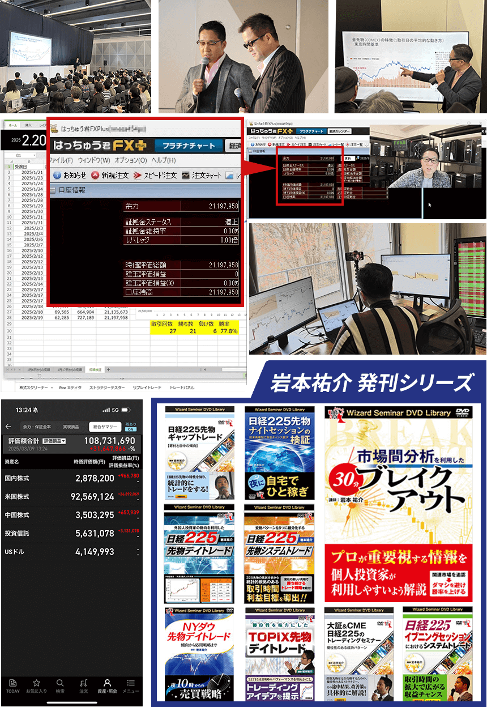
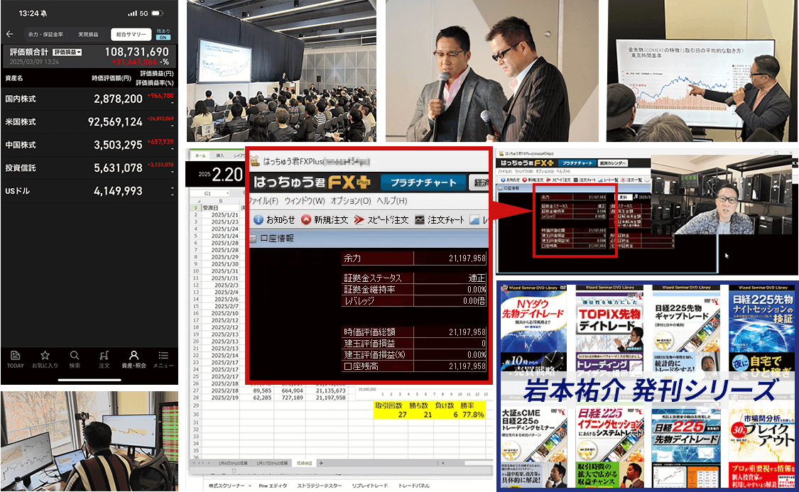
岩本40年間の
証券・投資・トレーダー人生の集大成
あなたの隣で仲間と共に学び、
結果を出し、楽しむコミュニティ
トレードLabとは？
参加者みんなで”楽しむ”ことを最大の目的にしたコミュニティ
楽しむためにはお金が必要ですから、お金の不安を抱えない為に、 トレードで稼ぎ続ける生涯スキルと、稼いだお金を投資で安定させる知識を あなたの隣で直接お伝えしていく環境。
まずは10万円などの小資金を1,000万円まで拡大すること。
その後は、投資で安定させつつトレードも継続し、資産1億円を目指す。
並行して仲間と共に「更に効率の良い」トレード手法の研究や、 仲間と一緒に改めて青春時代を生きる為のイベントなど、
「大人のためのキャンパスライフ」がトレードLabです！
トレードLab５つの特徴
Feature 01
実需×出来高＝ネイキッドトレード
実需を元に方向性を判定する「アルゴシステム」をベースに、出来高から売買ポイントを見極める裁量を取り入れたネイキッドトレードをマスターしていただきます。
1〜2ヶ月もあれば基礎はマスターして頂けるので、並行してライブ配信や動画による「ケーススタディ」をお届けしつつ、応用も効くレベルへと昇華していただきます。
トレLabではこのネイキッドトレードを「生涯スキル」のベースとして習得していただきます。
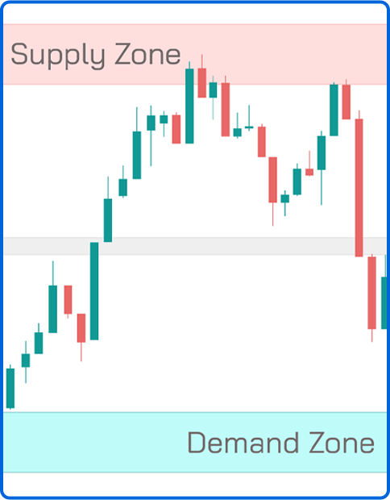
Feature 02
投資×トレードの原理原則
本来トレードなんてものは「上がるか下がるか？」という２者択一の勝率50％のゲームですから「大きく負ける」なんてことはあり得ないはずなんです。
しかしそれでも負ける人が後を絶たないのは「原理原則」を理解していないから。
また、勝っているはずなのに「大きく伸ばせない」のも、この原理原則を知らないからです。
そこでトレLabでは、投資やトレードにおける「原理原則」をイチから学んでいただきます。
マネーマネジメントを含む「リスクコントロール」という概念を身につけることで、大きく負けることを無くして大きく勝つ方法を「理論」として習得していただきます。
Feature 03
トレードを極める為の各種設備
学んだトレードスキルや原理原則を「習得」するには実践が必要ですが、その実践を進めていく際に「無駄な工程」はツールやシステムで簡略化し、大変だけど「必要な工程」はきちんと身につく形で進められる・・・そんな「設備」もご用意しています。
例えば、原理原則の１つであるポジションサイジングで「ロット計算」を行う際はツールでサクッと計算できるようにしたり、自分自身のクセを把握する為に「トレード日記」をつける際は、売買記録を簡単に分析できるシステムを使えたり・・・
こういった各種設備をご用意していますし、必要であればドンドン充実させていきますので、トレLabという環境があれば他に何もいらない！というレベルを目指していきます。
Feature 04
トレードから投資へ
基本的には「トレード」という生涯スキルを身に着けていただくことが最初の目標ですが、資産1,000万円を超えてからはトレード単体よりも「投資」を組み合わせるほうが資産形成は安定します。
それに「投資」の方が時間的な余裕も生みやすいので、お金だけではなく「人生を楽しむ」というトレLabの目的の為にも、トレードのその先・・・投資に関する知識や原理原則もお伝えしていきます。
Feature 05
脱落者ゼロを目指す助け合いの環境
トレラボでは「脱落者ゼロ」を目標にしていますので、できる限りの環境を整備しています。
リアルやオンラインでの勉強会もそうですが、いつでもご質問頂ける電話やチャットによるサポートもその一環。
また、僕とあなたの関係が先生と生徒だとするなら、トレラボの仲間たちは先輩と後輩、ライバルや友人ですから、皆で成長していくための環境にも力を入れています。
１人はみんなの為に。みんなは１人の為に。
これを実現する環境をお届けします。
トレードLab
３つのステップ
第１ステップ：１～２ヶ月
ネイキッド×原理原則の学習
最初の２ヶ月間は実践よりも学習に時間を割いていただきます。
自動車教習所で言うところの「学科」みたいなものですが、何をするにも学習という工程は非常に重要なので、まずは知識のインプットから徹底的に進めていただきます。
この段階で「これで合ってるのか？」という疑問も生まれてきますが、それも僕からお届けするリアルタイムな「ケーススタディ」で答え合わせをして頂けますので、合っているかどうかの不安も「大丈夫！合ってるぞ！」という確信へと変えて頂けます。
第２ステップ：３～６ヶ月
ネイキッドトレード実践編
ベースの学習が終わったら次は実践編です。
自動車教習所で言うところの「実技」ですが、ここでは「デモ口座」もしくは「小資金口座」を使って実際にトレードして頂きます。
並行してトレード結果の分析なども行って頂きますので、ご自身の得意とする場面や苦手な状況なども把握して頂きつつ、勉強会やケーススタディを通じて学習から「習得する」というフェーズにはいって頂きます。
ネイキッドは他のトレードノウハウと比べて「シンプルで分かりやすい」という特徴があるので、この「習得する」という工程も進みが早い分「楽しんで」習得して頂けると思います。
第３ステップ：７ヶ月～∞
トレードのその先へ
ネイキッドの習得が進めば「本番」へ移行していただきます。自動車教習所を卒業し「初心者」として公道に出るターンですね。
早ければ第２ステップ途中でこの工程に進んでいただきますが、遅くとも半年で学校期間は卒業して一人前のトレーダーとして社会に出ていただきます。
しかし同時に、まだまだ初心者ですしトレードのその先（投資）への工程も残っていますし・・・何より「人生を楽しむ」という本来の目的があります。
ですからあなたが望む限りはずっと一緒に、高みを目指したり、新しいトレードノウハウを研究したり、一緒に遊んだりしつつ、大人のキャンパスライフを満喫していきたいと考えています。
はい。これが「トレードLab」という環境ですが、この環境こそがあなたもトレラボの仲間も僕自身も、みんなにとってベストな環境だと自信を持って断言します。
その理由は、トレードにおける絶対的な土台とも言える原理原則から、僕自身の証券やトレーダーとしての約40年に及ぶ「ノウハウの集大成」とも言える方法論（ロジック）という「２つの軸」をミッチリお伝えしますので、初心者や未経験者から中級、上級者までをカバーできているカリキュラムがあることが１つ。
更にトレード（投機）から投資へ・・・という次のステップまでをお伝えすることで、投機と投資の違いや「両立するべきか？」「切り替えるならどのタイミングか？」などの疑問、投資ならどのようなポートフォリオを組むべきか？などの知識まで、トレードの「その先」までカバーしていることが２つ目。
そして何より、これらを１人孤独に学ぶわけではなく、リアルやオンライの勉強会を通して僕が「直接」お伝えしたり、日常的に僕のリアルタイムなトレードを公開して「見て学ぶ」こともできますし、他の仲間達とのコミュニケーションを取れる場も多数用意している上に、各種イベントで「遊ぶ・楽しむ」という場もご用意しているので「楽しみながら成長できる」というのが最後の１つ。
これらの理由から、トレードを生涯スキルへと昇華できるレベルで身につけ、更には投資で安定と時間的な余裕も手に入れ、更には人生を楽しむための「もう１つの場所」としてのコミュニティを持てる・・・
そういった点からトレラボが「ベストな環境」だと断言しているわけですね。
とは言え、
「詳細が分からないことには何とも・・・」
というのが今のあなたの本音だと思いますので、ここから詳細をお伝えしていきたいと思います。
まずは何より重要な「本当にトレードで勝てるようになるのか？」という点からお伝えしたいと思います。
トレードで勝つ為には？
トレードとは極端なことを言えば「上がるか下がるか？」という二者択一。全く何も考えなくても勝率50％という「勝ちも負けもしないゲーム」なんですね。
そんな「プラスマイナス”ゼロ”」であるはずのトレードで勝つ為に必要なことの１つ目は、リスクリワード比1：1で勝率50％というフラットな状態から、少しでも勝率やリスクリワードを引き上げる「偏り（かたより）」を見つけ出すこと。
つまり「ウイニングエッジ（勝つ為の優位性）」を見つけることができるかどうかがキモになります。
加えて、本来「勝ちも負けもしないゲーム」であるはずのトレードで大きく負けてしまう人が多い理由が、トレードの原理原則である「リスクコントロール」を知らないからです。
ですから、この原理原則（リスクコントロール）を身に着けておけば、そもそも「大きく負ける」ことはなくなりますし、勝つときもチマチマ勝つのではなく「大きく勝てる」ようになります。
この２点が「ノウハウ」と言われる部分ですが、これらを正しく理解する為には隣で正解を見続けないと間違った解釈をしてしまいがちですし、１人孤独にチャートとにらめっこしてばかりではメンタルもおかしくなってしまいます。
何より「ストレス過多」な状態は人間として正常な状況とはとても言えません。
だからこそ、
理解が合っているどうかを確認できる環境
困った時や悩んだ時にすぐに相談できる環境
雑談を交えて意見交換できる仲間のいる環境
競い合えるライバルと共に成長できる環境
成果を出せた時に喜びあえ讃えあえる環境
こういった環境も「必須」なんですね。
逆に言えば、この３つが揃っていればハッキリ言ってトレードで勝つことは難しくありません。
まずはこの点をしっかり覚えていてください。
その上で、まずは「ウイニングエッジ」が無いと始まらないわけですが、トレLabでは僕の40年間の集大成である「ネイキッドトレード」という手法をご提供しています。
ネイキッドトレードとは？
形式としては「システム×裁量」を組み合わせたトレード手法ですが、本質的には「実需×出来高」という組み合わせがネイキッドトレードです。
チャートパターンがどうとか直近高値安値の水平線がどうとかってよく耳にしますが、「なぜそういう結果になるのか？」という、現実世界における明確な理由のない「表面的なロジック」をウイニングエッジとは言いません。
それはただの偶然。
明日からはどうなるか分からないものです。
ですがネイキッドトレードは、実体経済における取引である「実需」と、実際に取引が行われた結果である「出来高」から、上がるか下がるかの方向性や売買ポイントを決めるトレード手法なので、表面的なロジックではなく「狙い通りに動いて”当たり前”」なトレード手法なんですね。
これらについてはさんざんビデオ講座でお伝えしてきたことなので詳細は省きますが、以下で要点だけまとめておきます。
実需を元に方向性を判断する
アルゴシステム
FXとは「外国為替市場」の中の「証拠金取引」と呼ばれる「仮需（かりじゅ）」のことですが、外国為替市場全体で言えばFXが占めている割合はごく一部にしか過ぎません。
大半を占めているのはFXなどの仮需ではなく「実体経済＝実需」で、主に貿易や旅行などに伴う「エクスチェンジ（両替）」が外国為替市場の主な取引です。
つまり、FXでよく耳にする「テクニカル分析」において「直近高値が意識されていて～」などは、全体のボリュームからすると些細な話なので「大きな影響」を与えることはまず無いんですね。大海に小石を投げ入れるようなものなので。
それに対して「実需」は外国為替市場の主たる取引なので、最も大きな影響を与える取引の１つです。
実需以外で大きな影響を与えるのはもはや政治の世界なので、大局観で見たファンダメンタルズの世界ですね。
つまり、日常的な取引における最も大きな要因は間違いなく「実需」であり、銀行を介して行われる実需の取引状況を元に分析することで、上がるか下がるか？という「方向性」だけを判断するのは難しくありません。
とは言え世界中で毎日平均「約1,125兆円」もの取引が行われている外国為替市場全体をリアルタイムに目視で把握して分析、判断を行うのは不可能なので、ここの判断はシステムで行っています。
それが「アルゴシステム」です。
アルゴシステムは1日最大で3回、
ほぼ決まった時間にサインが出るシステムです
| エントリー | エグジット | |
|---|---|---|
| アルゴ_Tokyo | 9時55分 （冬時間：同じ） |
12時30分～14時（冬時間：同じ） |
| アルゴ_London7 | 15時（冬時間：16時） | 16時～17時（冬時間：17時～18時） |
| アルゴ_London8 | 16時 or 17時（冬時間：17時 or 18時） | 17時～21時（冬時間：18時～22時） |
1日3回のサインが出るタイミングはそれぞれ上記の通りとなっており、相場の状況によっては1日1回しか出ない日もあれば全くサインが出ない日もあります。
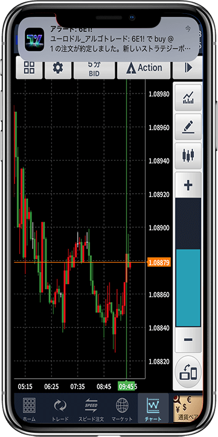
また、これらのサインはスマホでも通知＆確認できるので、見逃す心配はありません。
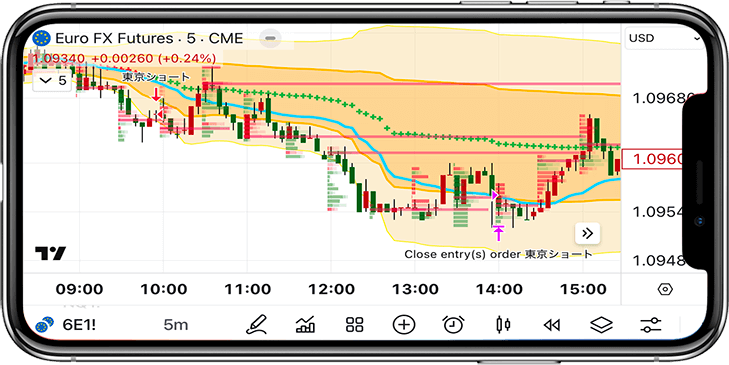
アルゴシステムで方向性を判断し
裁量トレードで売買ポイントを明確に
アルゴシステムは実需を元に「大きな方向性」を割り出すシステムなので、サイン通りに売買する…と言うよりは、サインが出た方向に動いていく可能性が高い！って点だけを把握する為のシステムだとお考えください。
つまり、細かなこと・・・
「どこで買ってどこで売るのか？」という売買ポイントは裁量で行う必要があります。
テクニカル分析を使ったトレードが一般的な裁量トレードですが、一般的なテクニカルはネイキッドトレードでは一切使いません。
移動平均がどうとかRSIがこうとか…
直近高値がどうとか安値がこうとか…
チャートパターンがどうとかこうとか…
こういった「価格」にだけ着目したテクニカルはどうしても判断基準が「曖昧」になりがちですが、ネイキッドトレードでは「価格ではなく”出来高”」で売買ポイントを決めるので、
・勝率7割（リスクリワード比1：1.48）という精度を誇る
・曖昧さがほぼ無く非常に明確。誰しも着目点が同じになる
・着目点が明確だから迷わない。結果的に非常にシンプル
このような特徴のある、主観だらけの一般的なテクニカルとか裁量とは一線を画す画期的な裁量トレードとなっております。
出来高でトレードすると、
なぜ明確で精度も高いのか？
なぜ裁量なのに曖昧ではなく明確でシンプルな再現性の高いトレード手法になるのか？と言うと、出来高を使ったトレードだから・・・としか言いようがありません。
例えば、10時～11時という時間帯の中で「最も取引量が多かった価格は？」という答えは１つ”しか”ありません。
そこに「曖昧さ」なんてものは存在せず、小学１年生レベルの算数が出来る人なら誰が見ても「同じ答え」になります。
これが出来高の特徴であり、その出来高を元に判断するトレード手法がネイキッドトレードなので、裁量なのに明確でシンプル。尚且つ再現性の高いトレード手法になるわけです。
ではなぜ「出来高」を元にトレードすると精度も高くなるのか？
これもビデオ講座でお伝えしたことではありますが、簡単に言えば「信憑性が高い」からです。
例えば、
10人が「5万円が適正価格だ！」と言って売買したパソコン
1万人が「10万円が適正価格だ！」と言って売買したパソコン
どちらの価格の方が本当の意味で「適正価格」だと思いますか？
当然10万円の方が適正価格だと判断すると思いますが、このように「納得して売買した人が多い価格」は価格の信憑性が高いと言えます。
FXにおける出来高は通貨そのものの売買ですが理屈は同じ。
ドル円150円で売買した人（厳密にはボリューム）より151円で売買した人の方が圧倒的に多かったとしたら、その後も150円より151円を目指す可能性が高い（信憑性が高い）と判断する・・・という事ですね。
出来高は”仮説”ではなく「実際にその価格で取引した金額量」という事実を反映したものだからこそ信憑性が高いのです。
実際にこれを約30年間ほど分析し続けていますが、やっぱりこの理論は正しいということが証明できているので、ネイキッドトレードは勝率7割という圧倒的なパフォーマンスを叩き出せているわけです。
ネイキッドトレードの詳細
ネイキッドトレードの論点やポイント、ロジックの裏にある背景や理由などは一通りお伝えできたかと思いますので、次は「その結果はどうなのか？」という、実際にはどのような結果が出ているのかをお伝えしておきます。
以下に、要点のまとめと成績を掲載しておきます。
ネイキッドトレードとは？
手法要点
実需×出来高トレード
実需から相場の方向性を割り出し、出来高を元に売買（トレード）する手法
実需（実体経済）を元にしているので上がるか下がるかの方向性を割り出す精度は高く、出来高という「実際に取引が実現した価格の信憑性」を元にした裁量トレードも、一般的なテクニカル分析と比べると非常に精度が高く、かつ「シンプルで人による差が出にくい」という特徴があります。
トレード
スタイル
デイトレード
ネイキッドトレードにおけるトレードチャンスは「最大で１日３回」だけで、その３回もおおむね「時間が決まっている」トレードとなります。
午前9時55分と15時と16時or17時（冬時間は9時55分と16時と17時or18時）の３回で、エントリーした後は狙った売買ポイント（損切りや利食い）にタッチしなくても、それぞれ2～3時間でトレード終了となります。
つまり、絶対に「日をまたがない」ので、仮に損切り（ロスカット）を入れ忘れていたとしても、時間になれば必ず決済を行うことになるので急激な価格変動に強いトレード方法です。
通貨ペア
ユーロドル
（EUR/USD）のみ
様々な通貨ペアを監視してチャンスを見つけるテクニカル分析の王道手法と違い、ネイキッドトレードでは「ユーロドルのみ」しかトレードしません。
ユーロドルの組み合わせが最もマーケットが大きく安定しているので、「マーケットインパクト」と呼ばれる予想外の出来事（不測の事態）が起こりにくい通貨ペアだからですね。
それはつまり、実需を元にしたネイキッドトレードに最も適した通貨ペアだということでもあります。
また、１つの通貨ペアしか監視しないので、結果的にシンプルでストレスも少ない…という副次的なメリットもあります。
最低資金
７万円から
（最低１０万円推奨）
これは厳密に言うなら「日本のFX業者」を使う場合の最低資金です。
ネイキッドトレードの成績とリスクマネジメントの観点から、国内業者の場合は「元本７万円に対して１万通貨（1Lot）」であれば、安心してトレードして頂けます。
海外業者であれば、業者による違いが大きいので一概に言えませんが、恐らく３～５万円くらいが最低資金になるかと思います。
平均利回り
12.21％／月間
こちらに関しては特に説明は不要だと思いますが、要は過去の実績上、元本100万円でトレードしたら１ヶ月で平均112万円になったということです。
また、月利で10％をこえる数字は「トレードにおける最大レベル」だとお考え頂いて間違いありません。
あまりにも大きな利回りを生む方法は「一時的な歪」が原因の場合が多く、長続きしないのが現実なので。
勝率
69.63％
トレード回数の少ないスイングトレードや長期トレードではなく、デイトレードという短期トレードの手法において勝率が約７割というのは「相当高い勝率」だと思って頂いて間違いありません。
「勝率が高いとメンタル面も安定しやすいという副次的なメリットもありますので、個人的には「極端な損小利大」を狙って勝率を犠牲にする手法より、少なくとも損小利大を維持したうえで高勝率を担保できるネイキッドトレードが好みですしオススメしやすいです。
リスクリワード
レシオ
1：1.48
ご存知だと思いますがリスクリワードとは、負けた時の平均損失を「１」とした場合、勝った時の平均利益がいくらか？を示す指標です。
この指標が「１：１」で勝率が50％を超えていれば「優位性がある」とみなすことが出来るわけですが、ネイキッドトレードでは勝率が約７割に対してリスクリワードレシオは「1：1.48」です。
これは、月間平均トレード回数が18回というネイキッドトレードの場合、5回負けて13回勝つ…という勝率で、1回の負けに対して仮に1万円負けるとした場合、勝つ時は約1万5千円ほどの利益が出るということ。
つまり、
負け：１万円×５回＝５万円
勝ち：１.５万円×１３回＝１９.５万円
利益：１９.５万円－５万円＝１４.５万円
という事になります。
プロフィット
ファクター
3.39
こちらの指標もご存知の方が大半だとは思いますが、総利益と総損失の比率（バランス）を表す指標です。
トレード戦略における性能評価に用いられる指標で、「総利益 ÷ 総損失」という計算でもとめられ、「１」以上の数字になれば「優位性がある」と認められます。
その上で、ネイキッドトレードの「3.39」という数字は「かなり高い」とお考え頂いて間違いありません。
トレード回数
平均18回／月間
この平均18回という数字は、実際に僕がトレードした回数で出していますが、気分で休んだり、あえて休憩期間を設けていたりしている期間も含んでいるので、本気で集中してトレードすればもっと回数は増えると思います。
あくまで僕の肌感覚（主観）にはなりますが、平均すると１日１回～２回くらい、月間にして２５回くらいはトレードチャンスがあると思います。
その上で、月間２５回でも「デイトレ」という意味では多くはありませんが、勝てる時にだけトレードする・・・という意味では、これくらいが丁度良いと思っております。
インジ
ケーター
アルゴシステム他
ネイキッドトレードでは「買いか売りかの方向性」は、アルゴシステムというサインツールを使用します。
それ以外にも出来高を把握するインジケーターや平均出来高を表示するV-wapというインジケーターなど、多くの方にとって馴染みのないインジケーターを使用しますが、使い方は非常にシンプルなので慣れるのも早いと思います。
ネイキッドトレードの成績
| 年月 | pips | トレード回数 | 勝率 | プロフィット ファクター |
リスクリワード |
|---|---|---|---|---|---|
| 2023年 8月 |
0 | ||||
| 2023年 9月 |
131.3 | 19 | 73.68% | 6.23 | 2.23 |
| 2023年 10月 |
68.7 | 19 | 47.37% | 2.77 | 3.07 |
| 2023年 11月 |
65.4 | 24 | 62.50% | 2.45 | 1.47 |
| 2023年 12月 |
125.5 | 22 | 81.82% | 10.96 | 2.44 |
| 2023年 合計 |
390.9 | 84 | 66.67% | 4.21 | 2.24 |
| 2024年 1月 |
69.2 | 22 | 68.18％ | 3.24 | 1.51 |
| 2024年 2月 |
65.2 | 20 | 75.00% | 3.79 | 1.26 |
| 2024年 3月 |
72.8 | 15 | 93.33% | 49.53 | 3.54 |
| 2024年 4月 |
17.2 | 29 | 62.07% | 1.32 | 0.81 |
| 2024年 5月 |
77.2 | 20 | 75.00% | 7.03 | 2.34 |
| 2024年 6月 |
25.3 | 13 | 53.85% | 2.30 | 1.97 |
| 2024年 7月 |
50.9 | 19 | 63.16% | 2.41 | 1.41 |
| 2024年 8月 |
30.3 | 18 | 66.67% | 1.90 | 0.95 |
| 2024年 9月 |
53.9 | 15 | 66.67% | 3.22 | 1.61 |
| 2024年 10月 |
24.2 | 15 | 80.00% | 4.18 | 1.05 |
| 2024年 11月 |
18.6 | 5 | 80.00% | 4.00 | 1.00 |
| 2024年 12月 |
15.4 | 14 | 64.29% | 2.86 | 1.59 |
| 2024年 合計 |
520.2 | 205 | 69.76% | 3.02 | 1.40 |
| 2025年 1月 |
33.4 | 20 | 80.00％ | 5.28 | 1.32 |
| 2025年 2月 |
22.1 | 17 | 70.59％ | 2.32 | 0.96 |
| 2025年 3月 |
|||||
| 2025年 4月 |
68.8 | 12 | 75.00% | 4.98 | 1.66 |
| 2025年 5月 |
|||||
| 2025年 6月 |
|||||
| 2025年 7月 |
64.4 | 10 | 90.00% | 8.08 | 0.9 |
| 2025年 8月 |
49.9 | 24 | 79.17% | 3.19 | 0.84 |
| 2025年 9月 |
34.9 | 14 | 71.43% | 4.36 | 1.74 |
| 2025年 10月 |
32.8 | 14 | 85.71% | 4.45 | 0.74 |
| 2025年 11月 |
29.9 | 10 | 90.00% | 9.08 | 1.01 |
| 2025年 12月 |
22.8 | 9 | 77.78% | 3.85 | 1.1 |
| 2025年 合計 |
359.0 | 130 | 79.23% | 4.41 | 1.15 |
| 2026年 1月 |
37.4 | 13 | 92.30% | 14.85 | 1.24 |
| 2026年 2月 |
19.7 | 15 | 66.67% | 2.28 | 1.14 |
| 2026年 合計 |
57.1 | 28 | 78.57% | 4.15 | 1.13 |
・「負け数」には「引き分け(同値撤退)」を含んでいます。
・2025年2月は実践収録終了後の20日以降はトレード休み
・2025年3月はお休みしていたので「トレード無し」です。
・2025年5月はGW休み後、書籍執筆のためトレード休み
・2025年6月も引き続き書籍執筆に集中するためトレード休み
・2025年9月はファンド向けシステム開発のため、あまりトレードできませんでした。
・2025年10月はトレードラボの開始ということもあり、9日まで取引せずでした。
・2025年12月は年末、各市場ともクリスマス休暇もあり、出来高減少、動きも安定しないので、トレード控えめでした。
相乗りチャートを導入することで
あなたもネイキッドを完全再現！
ここまでネイキッドトレード（アルゴシステム含め）の詳細を説明してきましたが、もしかするとあなたは…
「私にも再現できますか？」
このような不安を感じておられるかも知れませんが、そこは声を大にして
「大丈夫です！」
と、断言させていただきます。
と言うのも、トレードLabでは僕が使っている「チャート設定」を丸っとそのままご提供しているのですが、このチャートを使えば、ここまで説明してきた「アルゴシステム」も「出来高関係」も全て設定されているので、後は使い方を知って頂ければネイキッドトレードの再現は難しくありません。
参考までに「よくある」シーンの１つを解説しておきます。
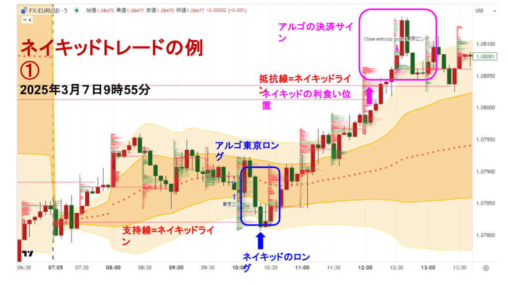
まずはアルゴシステムで「東京ロング」というサインが出ます。
その後、エントリータイミングをはかるのですが、ローソク足に被るように赤や緑の細かな棒グラフが横向きにたくさんあると思いますが、こちらは「出来高（取引ボリューム）」を表していて、そのあたりの時間帯で「最も大きな出来高＝最も注文された価格＝最も信憑性の高い価格」が、右側に向けて赤い線が伸びている水平線です。
これを「ネイキッドライン」と呼んでいて、一般的なトレーダーが直近高値や安値を結んで引く水平線の代わりに、ネイキッドトレードでは「サポート＆レジスタンスライン（サポレジ）」として使う重要なラインとなります。
ちなみにこのネイキッドラインは“自動的に”引かれますので、いちいち「最も出来高が大きな価格はどれか？」なんてことを目視で調べる必要はありません！
話を戻して、アルゴシステムでロング（買い）のサインが出た後、チャートは少しずつ下げてきて、10時20分のローソク足でネイキッドライン（支持線＝サポート）にタッチします。ここでエントリー（買い注文）ですね。
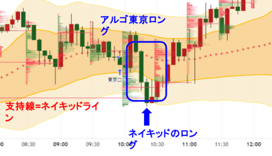
その後、順調に上昇していって12時10分と12時15分のローソク足で、次のネイキッドライン（抵抗線＝レジスタンス」）にタッチしますが、ここで決済（利確＝イグジット）となります。
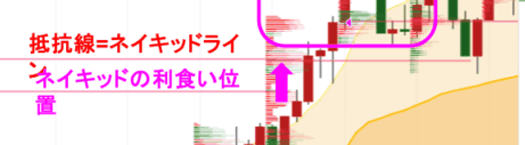
その後、12時30分の時点で「アルゴシステム」でも決済サインが出ていますが、すでにネイキッドラインにタッチして決済済なのでスルーで問題ありません。
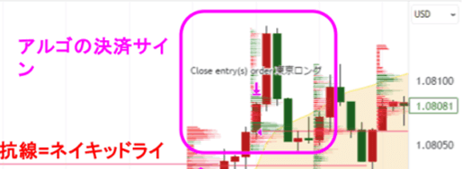
仮に、抵抗線となるネイキッドラインにタッチしないまま、アルゴシステムの決済サインが出た場合は、決済サインに従って「クローズ（決済）」します。その時点で利益が出ていても損失が出ていたとしても、どちらの場合でもクローズとなります。
また、ロスカット（損切り）はエントリーした足の少し下らへん（1.078あたり）に置きますので、仮に損切りとなってしまっても大ダメージは回避できるような位置で撤退することになるので安心です。
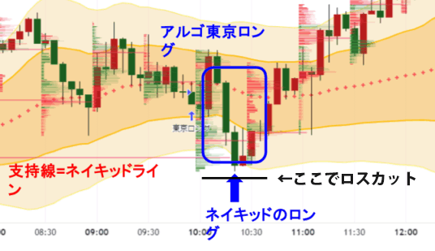
はい。これは１つの事例ではありますが、基本的にネイキッドトレードにおける裁量は「非常にシンプル」で「主観による違い（直近高値とは？など）」がほとんど無いのが特徴です。
つまり、本格的にネイキッドトレードを学ぶと大体みなさん１ヶ月くらいでベースは身について、２ヶ月もあれば応用編（様々なケーススタディ）までマスターされているので、間違いなくあなたもマスターして頂けます。
また、僕が使っているこのチャートを、実体経済を反映した銀行や大口機関投資家の動きに便乗する・・・という意味を込めて「相乗りチャート（別名”コバンザメ”チャート）」と呼んでいるのですが、この相乗りチャートは僕と全く同じ設定でそのまま使って頂けます。
なので上記「参考」のように、ネイキッドトレードを再現するのは「かなり簡単」だと思いますが・・・
ネイキッドをマスターするまでは、
アルゴシステムに従うだけでも・・・
先ほど解説した通り、ネイキッドトレードは「かなり」再現性が高く、明確でシンプルなものとなっていると自負していますが、それでもまだ「再現できるか不安」という気持ちもあるかと思います。
実際問題として、ネイキッドを完全にマスターして頂くには何パターンもケーススタディを学んで頂く必要があるのは間違いないので、いきなり明日から100％再現できるか？と言われれば、それはさすがに無理です・・・って話になってしまいます。
僕の個人的な意見としては、ネイキッドの練習期間を１～２ヶ月ほどキチンと設けていただいてから本番にはいって頂くことを推奨していますが、どうしても・・・
どうしても「今すぐ」トレードしたい！って場合は、最悪「アルゴシステムに従うだけ」という選択肢もあるにはあります。
お伝えしたようにアルゴシステムは「方向性」を判断するためのシステムなので、アルゴのサイン通りに売買することを想定して作っているものではありません。
サイン通りに売買する為のシステムでは無いのですが・・・
結果としては、バックテスト期間とフォワード（実運用）期間を含めた約10年間という期間の中で、年間ベースでは負け無し！という成績ではあります。
| 年月 | pips | トレード回数 | 勝率 | プロフィット ファクター |
リスクリワード |
|---|---|---|---|---|---|
| 2016年 1月 |
222.3 | 21 | 66.67% | 5.97 | 2.99 |
| 2016年 2月 |
50.3 | 29 | 58.62% | 1.25 | 0.88 |
| 2016年 3月 |
-8.9 | 27 | 59.26% | 0.94 | 0.65 |
| 2016年 4月 |
116.7 | 33 | 63.64% | 1.91 | 1.09 |
| 2016年 5月 |
38.1 | 31 | 58.06% | 1.27 | 0.92 |
| 2016年 6月 |
171.6 | 31 | 74.19% | 3.03 | 1.05 |
| 2016年 7月 |
92.3 | 32 | 65.63% | 1.99 | 1.04 |
| 2016年 8月 |
67.2 | 37 | 59.46% | 1.61 | 1.10 |
| 2016年 9月 |
20.9 | 31 | 64.52% | 1.24 | 0.68 |
| 2016年 10月 |
-25.2 | 28 | 39.29% | 0.79 | 1.22 |
| 2016年 11月 |
-13.3 | 27 | 44.44% | 0.94 | 1.17 |
| 2016年 12月 |
175.1 | 30 | 70.00% | 3.25 | 1.39 |
|
2016年 合計 |
907.1 | 357 | 60.50% | 1.63 | 1.10 |
| 年月 | pips | トレード回数 | 勝率 | プロフィット ファクター |
リスクリワード |
|---|---|---|---|---|---|
| 2017年 1月 |
-27.8 | 37 | 51.35% | 0.88 | 0.83 |
| 2017年 2月 |
-15.2 | 28 | 50.00% | 0.88 | 0.88 |
| 2017年 3月 |
104.2 | 40 | 57.50% | 1.74 | 1.29 |
| 2017年 4月 |
-12.3 | 28 | 35.71% | 0.89 | 1.60 |
| 2017年 5月 |
109.6 | 33 | 54.55% | 2.32 | 1.93 |
| 2017年 6月 |
98.8 | 34 | 58.82% | 1.74 | 1.22 |
| 2017年 7月 |
-13.2 | 37 | 54.05% | 0.94 | 0.80 |
| 2017年 8月 |
70.5 | 35 | 62.86% | 1.63 | 0.96 |
| 2017年 9月 |
-47.7 | 36 | 44.44% | 0.79 | 0.99 |
| 2017年 10月 |
46.4 | 37 | 51.35% | 1.27 | 1.20 |
| 2017年 11月 |
138.5 | 34 | 76.47% | 2.39 | 0.73 |
| 2017年 12月 |
83.3 | 30 | 53.33% | 2.86 | 2.50 |
|
2017年 合計 |
535.1 | 409 | 54.52% | 1.32 | 1.10 |
| 年月 | pips | トレード回数 | 勝率 | プロフィット ファクター |
リスクリワード |
|---|---|---|---|---|---|
| 2018年 1月 |
45.5 | 30 | 46.67% | 1.25 | 1.43 |
| 2018年 2月 |
54.3 | 33 | 54.55% | 1.30 | 1.09 |
| 2018年 3月 |
160.7 | 32 | 56.25% | 2.92 | 2.27 |
| 2018年 4月 |
149.5 | 32 | 65.63% | 3.40 | 1.78 |
| 2018年 5月 |
136.9 | 28 | 60.71% | 2.00 | 1.30 |
| 2018年 6月 |
-44.4 | 35 | 45.71% | 0.85 | 1.00 |
| 2018年 7月 |
43.5 | 31 | 54.84% | 1.36 | 1.12 |
| 2018年 8月 |
20.5 | 29 | 58.62% | 1.17 | 0.83 |
| 2018年 9月 |
85.9 | 33 | 63.64% | 1.79 | 1.02 |
| 2018年 10月 |
40.7 | 36 | 55.56% | 1.24 | 0.99 |
| 2018年 11月 |
13.8 | 33 | 51.52% | 1.09 | 1.02 |
| 2018年 12月 |
70.6 | 24 | 62.50% | 1.59 | 0.95 |
|
2018年 合計 |
777.5 | 376 | 56.12% | 1.45 | 1.17 |
| 年月 | pips | トレード回数 | 勝率 | プロフィット ファクター |
リスクリワード |
|---|---|---|---|---|---|
| 2019年 1月 |
-33.0 | 36 | 52.78% | 0.81 | 0.72 |
| 2019年 2月 |
64.2 | 26 | 69.23% | 2.03 | 0.90 |
| 2019年 3月 |
-26.6 | 30 | 46.67% | 0.79 | 0.90 |
| 2019年 4月 |
61.2 | 28 | 53.57% | 1.95 | 1.69 |
| 2019年 5月 |
27.5 | 28 | 53.57% | 1.42 | 1.23 |
| 2019年 6月 |
7.3 | 32 | 53.13% | 1.08 | 0.95 |
| 2019年 7月 |
41.0 | 36 | 52.78% | 1.85 | 1.65 |
| 2019年 8月 |
-78.6 | 31 | 41.94% | 0.48 | 0.67 |
| 2019年 9月 |
63.6 | 27 | 55.56% | 1.87 | 1.49 |
| 2019年 10月 |
-25.4 | 36 | 38.89% | 0.80 | 1.26 |
| 2019年 11月 |
81.5 | 28 | 64.29% | 2.49 | 1.38 |
| 2019年 12月 |
24.2 | 24 | 66.67% | 1.48 | 0.74 |
|
2019年 合計 |
206.9 | 362 | 53.31% | 1.19 | 1.05 |
| 年月 | pips | トレード回数 | 勝率 | プロフィット ファクター |
リスクリワード |
|---|---|---|---|---|---|
| 2020年 1月 |
9.0 | 19 | 47.37% | 1.28 | 1.43 |
| 2020年 2月 |
-37.1 | 27 | 40.74% | 0.58 | 0.84 |
| 2020年 3月 |
238.3 | 27 | 66.67% | 2.43 | 1.21 |
| 2020年 4月 |
-89.0 | 26 | 50.00% | 0.60 | 0.60 |
| 2020年 5月 |
104.3 | 37 | 64.86% | 1.94 | 1.05 |
| 2020年 6月 |
108.4 | 34 | 55.88% | 1.97 | 1.55 |
| 2020年 7月 |
79.2 | 36 | 55.56% | 1.61 | 1.29 |
| 2020年 8月 |
43.7 | 29 | 65.52% | 1.33 | 0.70 |
| 2020年 9月 |
154.9 | 34 | 55.88% | 2.63 | 2.08 |
| 2020年 10月 |
61.4 | 34 | 47.06% | 1.39 | 1.57 |
| 2020年 11月 |
-64.2 | 35 | 54.29% | 0.77 | 0.65 |
| 2020年 12月 |
65.6 | 40 | 55.00% | 1.34 | 1.09 |
|
2020年 合計 |
674.5 | 378 | 55.29% | 1.39 | 1.06 |
| 年月 | pips | トレード回数 | 勝率 | プロフィット ファクター |
リスクリワード |
|---|---|---|---|---|---|
| 2021年 1月 |
40.2 | 32 | 56.25% | 1.24 | 0.96 |
| 2021年 2月 |
135.2 | 30 | 73.33% | 2.86 | 1.04 |
| 2021年 3月 |
27.6 | 30 | 53.33% | 1.15 | 1.01 |
| 2021年 4月 |
70.6 | 35 | 51.43% | 1.56 | 1.47 |
| 2021年 5月 |
-6.3 | 31 | 45.16% | 0.96 | 1.16 |
| 2021年 6月 |
29.1 | 27 | 55.56% | 1.39 | 1.11 |
| 2021年 7月 |
11.8 | 35 | 51.43% | 1.10 | 1.03 |
| 2021年 8月 |
94.8 | 35 | 57.14% | 3.23 | 2.42 |
| 2021年 9月 |
-12.0 | 25 | 52.00% | 0.85 | 0.78 |
| 2021年 10月 |
7.2 | 27 | 44.44% | 1.07 | 1.34 |
| 2021年 11月 |
60.6 | 36 | 61.11% | 1.40 | 0.89 |
| 2021年 12月 |
225.2 | 32 | 65.63% | 4.39 | 2.30 |
|
2021年 合計 |
684.0 | 375 | 55.73% | 1.51 | 1.18 |
| 年月 | pips | トレード回数 | 勝率 | プロフィット ファクター |
リスクリワード |
|---|---|---|---|---|---|
| 2022年 1月 |
37.6 | 30 | 56.67% | 1.34 | 1.03 |
| 2022年 2月 |
183.2 | 28 | 64.29% | 3.22 | 1.79 |
| 2022年 3月 |
197.3 | 32 | 65.63% | 2.63 | 1.38 |
| 2022年 4月 |
197.3 | 31 | 48.39% | 1.18 | 1.26 |
| 2022年 5月 |
-66.1 | 28 | 50.00% | 0.72 | 0.72 |
| 2022年 6月 |
207.3 | 39 | 71.79% | 2.75 | 1.08 |
| 2022年 7月 |
186.9 | 31 | 77.42% | 2.21 | 0.64 |
| 2022年 8月 |
-22.7 | 33 | 51.52% | 0.90 | 0.85 |
| 2022年 9月 |
118.7 | 25 | 60.00% | 2.17 | 1.44 |
| 2022年 10月 |
98.9 | 31 | 58.06% | 1.73 | 1.25 |
| 2022年 11月 |
-23.9 | 27 | 48.15% | 0.87 | 0.94 |
| 2022年 12月 |
64.9 | 32 | 53.13% | 1.41 | 1.24 |
|
2022年 合計 |
1017.4 | 367 | 59.13% | 1.56 | 1.06 |
| 年月 | pips | トレード回数 | 勝率 | プロフィット ファクター |
リスクリワード |
|---|---|---|---|---|---|
| 2023年 1月 |
105.3 | 28 | 64.29% | 2.20 | 1.22 |
| 2023年 2月 |
61.4 | 22 | 54.55% | 1.87 | 1.56 |
| 2023年 3月 |
38.3 | 33 | 51.52% | 1.22 | 1.15 |
| 2023年 4月 |
41.2 | 31 | 58.06% | 1.32 | 0.95 |
| 2023年 5月 |
118.1 | 25 | 64.00% | 2.83 | 1.59 |
| 2023年 6月 |
34.1 | 38 | 60.53% | 1.27 | 0.83 |
| 2023年 7月 |
68.9 | 32 | 56.25% | 1.70 | 1.33 |
| 2023年 8月 |
59.5 | 28 | 60.71% | 1.48 | 0.96 |
| 2023年 9月 |
89.6 | 25 | 64.00% | 2.20 | 1.24 |
| 2023年 10月 |
-12.3 | 28 | 35.71% | 0.90 | 1.63 |
| 2023年 11月 |
49.2 | 32 | 50.00% | 1.46 | 1.46 |
| 2023年 12月 |
74.6 | 31 | 58.06% | 1.86 | 1.34 |
|
2023年 合計 |
727.9 | 353 | 56.37% | 1.57 | 1.24 |
| 年月 | pips | トレード回数 | 勝率 | プロフィット ファクター |
リスクリワード |
|---|---|---|---|---|---|
| 2024年 1月 |
-96.9 | 25 | 44.00% | 0.44 | 0.56 |
| 2024年 2月 |
60.0 | 26 | 69.23% | 1.89 | 0.84 |
| 2024年 3月 |
24.8 | 27 | 48.15% | 1.28 | 1.38 |
| 2024年 4月 |
28.0 | 24 | 50.00% | 1.36 | 1.36 |
| 2024年 5月 |
7.6 | 40 | 50.00% | 1.06 | 1.06 |
| 2024年 6月 |
44.5 | 29 | 65.52% | 1.55 | 0.82 |
| 2024年 7月 |
54.2 | 32 | 50.00% | 1.65 | 1.65 |
| 2024年 8月 |
72.7 | 34 | 58.82% | 1.88 | 1.32 |
| 2024年 9月 |
105.1 | 31 | 77.42% | 2.88 | 0.84 |
| 2024年 10月 |
16.7 | 28 | 50.00% | 1.23 | 1.23 |
| 2024年 11月 |
63.3 | 25 | 60.00% | 1.51 | 1.00 |
| 2024年 12月 |
-96.7 | 29 | 44.83% | 0.47 | 0.58 |
|
2024年 合計 |
283.3 | 350 | 55.71% | 1.23 | 0.97 |
| 年月 | pips | トレード回数 | 勝率 | プロフィット ファクター |
リスクリワード |
|---|---|---|---|---|---|
| 2025年 1月 |
100.1 | 29 | 58.62% | 2.01 | 1.42 |
| 2025年 2月 |
73.2 | 28 | 64.29% | 1.92 | 1.07 |
| 2025年 3月 |
173.7 | 33 | 57.58% | 2.39 | 1.76 |
| 2025年 4月 |
-95.4 | 33 | 51.52% | 0.74 | 0.70 |
| 2025年 5月 |
11.7 | 36 | 47.22% | 1.06 | 1.18 |
| 2025年 6月 |
-20.5 | 31 | 45.16% | 0.89 | 1.08 |
| 2025年 7月 |
131.3 | 27 | 74.07% | 4.38 | 1.53 |
| 2025年 8月 |
50.7 | 34 | 58.82% | 1.35 | 0.94 |
| 2025年 9月 |
95.7 | 33 | 54.55% | 1.92 | 1.60 |
| 2025年 10月 |
-41.7 | 36 | 47.22% | 0.79 | 0.88 |
| 2025年 11月 |
31.1 | 28 | 64.30% | 1.47 | 0.82 |
| 2025年 12月 |
-20.5 | 34 | 50.00% | 0.87 | 0.87 |
|
2025年 合計 |
538.9 | 392 | 55.36% | 1.30 | 1.05 |
| 年月 | pips | トレード回数 | 勝率 | プロフィット ファクター |
リスクリワード |
|---|---|---|---|---|---|
| 2026年 1月 |
-77.5 | 33 | 45.45% | 0.58 | 0.70 |
| 2026年 2月 |
53.2 | 30 | 63.33% | 1.92 | 1.11 |
|
2026年 合計 |
-24.3 | 63 | 53.97% | 0.90 | 0.77 |
いくらネイキッドが優れていても、
リスクコントロールが出来ていないと・・・
ハッキリ断言しますが、ネイキッドトレードというトレード手法は本当の本当に「圧倒的に優れている」方法でして、約40年この業界にいる僕から見て「最も優れた手法」だと言い切れるレベルなんですね。
まさにウイニングエッジ！
なんですが・・・
どれだけネイキッドトレードが優れていようと、どれだけ勝てるノウハウを手にしようと、投資やトレードにおける「リスクコントロール」を理解していないと、結局のところ「負けてしまう」のがトレードの残酷なところ。
この「リスクコントロール」は原理原則と言い換えられるほど重要な考え方ですが、なぜか多くの人が蔑ろ（ないがしろ）にしてしまいがちな事でもあります。
冒頭でも話したと思いますが、FXを含め全てのトレードは本来ならリスクリワード比が1：1であれば勝率50％なので、何も考えなくても「負けない」のです。
ノウハウとか手法とかエッジとか無くても「負けない」のですよ！
実際には、証券会社（取引所）の手数料分だけダラダラ目減りしていきますが、それ以外のトレードという本筋では負けようがない・・・むしろ「負けるほうが異常」と言っても本来ならおかしくないんですね。
それなのに、負ける人…大きな損失を出してしまう人がなぜ後を絶たないのか？
その理由こそ「リスクコントロール」を”ちゃんと”理解していないからです。
投資の原理原則とも言える
リスクコントロールとは？
リスクコントロールの中でも代表的な「マネーマネジメント」についてはビデオ講座でもお伝えしたかと思います。
ポジションサイジング（複利 × ポジションサイズ）
ですね。
それ以外にも大きく６つの概念からリスクを考え、コントロールしていく考え方だと思って頂くと分かりやすいかと思います。簡単に説明しておくと・・
１．マインド
２．トレンド（方向性）
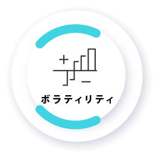
３．ボラティリティ（変動率）
ボラティリティに応じて利幅や損切りも変動させる必要があるので、固定pipsで売買ポイントを決めるのはハイリスク。
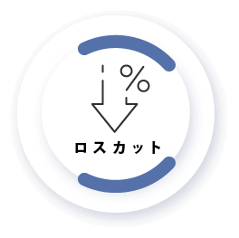
４．ロスカット（損切り）
５．ポジションサイジング
（資金管理）
６．システム（組み合わせ）
ロスカット幅（pips）はトレードノウハウ（エッジ）によっても「３」のボラティリティによっても異なるし、ロスカット金額（負け額）はポジションサイズ（資金率）によっても「１」のマインドによっても異なる・・・など。
「実技 × 学科」の両輪が重要
これらを身につける為の学校＝環境
ネイキッドトレードという方法論＝実技
リスクコントロールという原理原則＝学科
この２つが揃って「ノウハウ」となるわけですが、どちらか片方が欠けていては大事故に繋がってしまう言わば「両輪」にあたる関係性がこの２つです。
そしてこの２つを効率的に身につけるためには、やっぱり「学校」が必要なんですね。
自動車教習所が分かりやすい例だと思いますが、１人でドライビングテクニックを習得するのは難しいですし、仮にドライビングテクニックが優れていても道路標識を知らなければ必ず事故を起こします。
道路標識は１人黙々と学ぶことは出来ますが、実車しながら「左前方に速度標識があるので注意してね！」などの指摘をされながらじゃないと「本番で使える知識」へと昇華することは難しいわけです。
だからこそ２つ同時に連動させながら、尚且つ様々なケースに適応する形で「隣で一緒に」学んでいくスタイルが最も取得しやすい形だと言えるかと思います。
それが学校であり、トレードLabという環境そのもの（特に最初の２ヶ月間）なんですね。
加えて、トレラボという環境には先生役である僕と生徒であるあなた以外に、競い合い、励ましあい、共通の目標に向かって突き進んでいける仲間がいます。
この「競い合える仲間がいる環境」というのは、僕達が思ってる以上に「重要な価値」があります。
資格の学校にせよ何かのスキルの習得にせよ、１人で取り組むのと「大勢の仲間がいる環境」とでは習得速度も熟練度も全く違ってきます。本当に。
更にトレラボでは・・・
学校を卒業した後も
“コミュニティ”は続く！
ネイキッドトレードという実技とリスクコントロールという学科を学んで身につけて頂く期間を「学校」とするならば、トレラボでは2ヶ月間（60日間）という期間で「卒業」となります。
ベースとなるノウハウはこの期間で十分習得して頂けるからです。
しかし自動車教習所においても、卒業して免許を取った後も１年間は「初心者」という扱いですし、初心者マークが外れた後も「ベテラン」と呼ばれるまではだいぶかかります。
ペーパードライバーにならない限りは乗れなくなるまで乗り続けることになるわけですが、そんな生涯において「どんな車がいいか？」などの話を出来るのは「同じく車に乗っている人」です。
つまり何が言いたいかと言うと、ネイキッドトレードを２ヶ月でマスターした後も、まだまだ「初心者」ですから多くの不安も想定外のシチュエーションに出くわすこともあると思いますが、そこもトレラボではカバーできる体制をご用意しているのでご安心ください。
それが「60日間の学校」＋「120日間のコミュニティ」という体制です。
また、トレラボの真の目的は「一緒に多くの事を楽しむこと」です。
いわば、人生の後半も青春してしまおう！というのがトレラボで１番やりたい事なので、ネイキッド以外の手法を一緒に研究したり、僕の趣味である筋トレを一緒にしたり、あなたの趣味に皆で参加したり、一緒に旅行に行ったりバーベキューをしてみたり、グダグダと飲み明かしてみたり・・・
そういう「人生の共有」をしていきたいと思っています。
ですから「60日間の学校」＋「120日間のコミュニティ」という期間が過ぎた後も、あなたが望むのならば「ずっと」トレラボに参加して頂けます。
僕にとってトレラボは、今までやりたかった事を人生の最後にやっと実現できた環境ですから、最後の最後まで一生続けていきますので、あなたが退会しない限り僕から「もう辞める！」という事はありません！
それくらい僕にとっては大切な場所なので。
はい。そんなわけで長々とご説明してきましたが、ここからは「まとめ」と「トレLabの詳細」をお伝えしていきます。
トレードLab
全パッケージ内容
１．ネイキッドトレード
何度も繰り返しお伝えしてきた僕のトレーダー人生の終着点。それがネイキッドトレード。
実需を元に方向性を判断するアルゴシステムでサインを出し、そのサインに合わせて「どこでエントリーし、どこで決済（利確 or 損切り）するか？」を判断する裁量ノウハウ。
これらを25回のビデオ講座で徹底解説しています。
ペースとしては週に2回のビデオを進めて頂ければ２ヶ月でマスターできるペースですが、毎日1コマずつ進めて１ヶ月でマスターすることももちろん可能。
あなたのペースで学習を進めてしっかりマスターしてください！
２．アルゴシステム
実需を元に方向性（上がるか下がるか？）を判断し、サイン（シグナル）で通知してくれるシステムです。
「トレーディングビュー」というチャートシステムで稼働するシステムですが、パソコンだけでなく「スマホ」にも通知を出してくれるので、外出先でも見逃すことはありません。
また、ネイキッドのノウハウはシンプルなので「スマホでトレード」することも当然可能なので、仕事の合間にサインを確認してトイレでサクッとトレード・・・なんてことも可能です。
（利確or損切りも指値で予約可能）
アルゴのサインは毎日必ず出るわけではありませんが、１日最大で３回出ます。
| エントリー | エグジット | |
|---|---|---|
| アルゴ_Tokyo | 9時55分（冬時間：同じ） | 12時30分～14時（冬時間：同じ） |
| アルゴ_London7 | 15時（冬時間：16時） | 16時～17時（冬時間：17時～18時） |
| アルゴ_London8 | 16時 or 17時（冬時間：17時 or 18時） | 17時～21時（冬時間：18時～22時） |
※トレLab退会後も「月額5,500円(税込)～」にて継続的にご利用頂けます
３．相乗りチャート
ネイキッドトレードのコンセプトは「大きな流れに相乗りする事」です。
実需と呼ばれる「実体経済の流れ」であったり、その実体経済の流れに合わせて動く機関投資家であったり、こういった「強者」に逆らわずに相乗りしていくことが僕達「弱者の戦略」だと考えているからです。
こういった考えを反映した僕のトレードを再現する為のチャート設定を「相乗りチャート」と呼んでいて、あなたには実際に僕が使っているチャートを、システムやツール（インジケーター）、各種設定など全て含めて丸っとそのままご提供します。
アルゴは当然のことながら、裁量ノウハウのキモとなる「ネイキッドライン」や「V-wap」などのインジケーターも全てなので、相乗りチャートがあれば僕と「全く同じ環境」でトレードして頂けます。
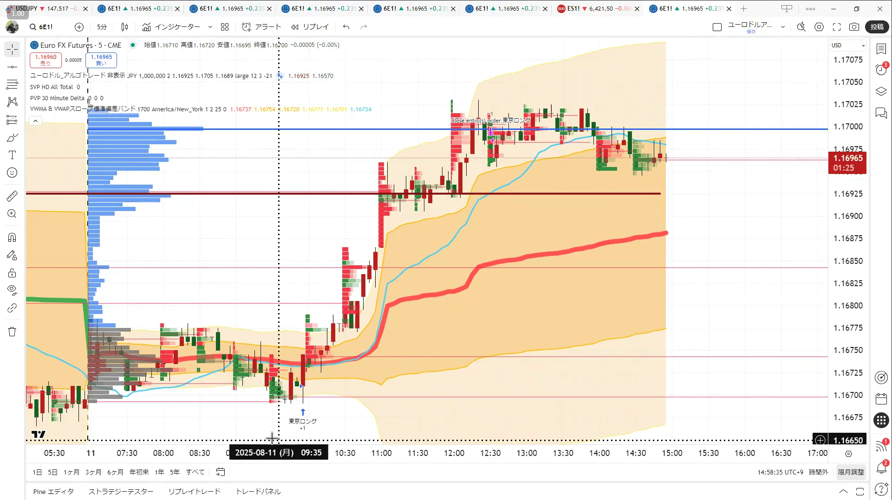
４．リスクコントロール
ロジックやエッジ（ネイキッドトレードなど）はトレードにおいて「攻め」を担う役割ですが、リスクコントロールは原則的には「守り」を担う役割です。
もちろん、ポジションサイジング（資金管理）を筆頭に「攻守ともに」という考え方も多数ありますが、前提としてはあくまで「守り」の要が、原理原則とも言えるリスクコントロールなんですね。
ですからリスクコントロールをマスターすることはトレードにおける「命綱」を結ぶことと同義なので、こちらも「ビデオ講座によるカリキュラム」で完璧にマスターして頂きます。
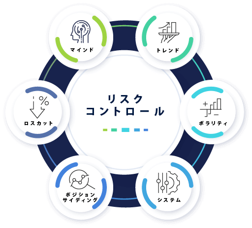
５．増え続けるケーススタディ
ネイキッドトレードやリスクコントロールのビデオ講座で「カリキュラム」は全てカバーしていて、カリキュラムが完了すればベースとしてのトレードはマスターして頂けている状態です。
とは言え、不測の事態や想定外のこと、微妙に判断に迷うシーンなんかもあるかと思いますので、実際のトレードシーンを解説した「解説動画＝ケーススタディ」を”常に”ご提供し続けます。
つまり、あらゆるシーンを網羅していくことになりますので、判断に迷う場合にサクッとご確認いただけたり、予習として様々なシーンを勉強して備えておくことが出来るので、本当の意味で「安心して」トレードライフを送って頂けます。
また、ケーススタディは常に最新のものを「解説付きで」追加し続けますので、ご自身の判断が間違っていなかったか？という復習としても活用していただけます。
更に可能な限り「毎週」お届けしますので、毎週動画で直近のトレードを解説付きでケーススタディとして（もちろんアーカイブされます）ご提供し続ける・・・ということですね！
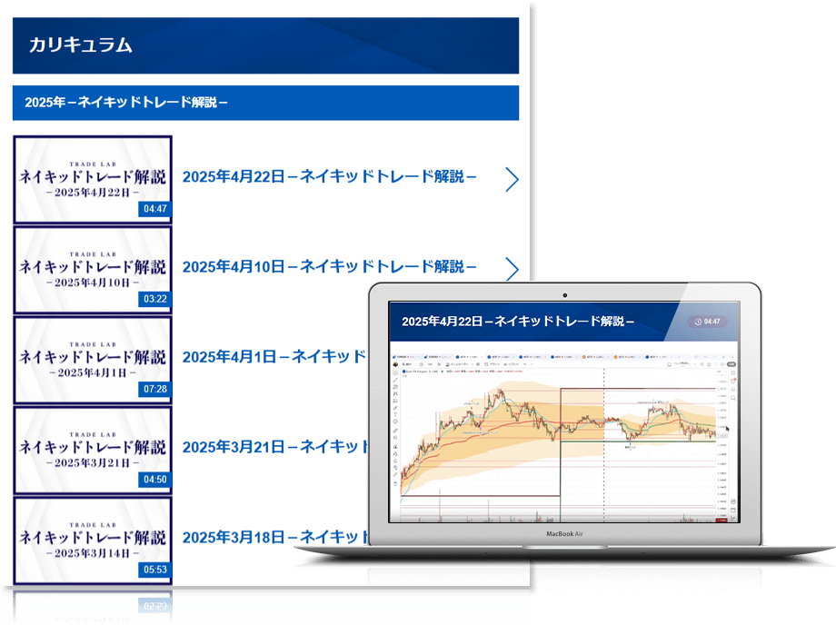
６．ロット計算ツール
ビデオ講座の中で「マネーマネジメント（資金管理）」についてお話したかと思いますが、基本的に「毎トレードごと」にポジションサイズ（ロット＝Lot）を計算してトレードすることになります。
計算式としては、ロスカット（損切り）ポイントを先に決めて、そのロスカット幅で損切りした際に「資金の何％を失うか？」という”資金率”を元に計算します。
この計算も「海外口座」と「国内口座」で違ったりしますので、意外と面倒くさかったりするのですが、そこを簡単にパッと計算してくれるツールをご用意していますので、面倒くさい計算はツールに任せてトレードに専念して頂けますので、ご安心ください。
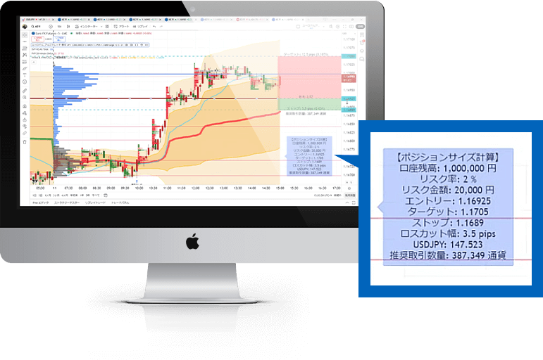
７．トレード記録システム
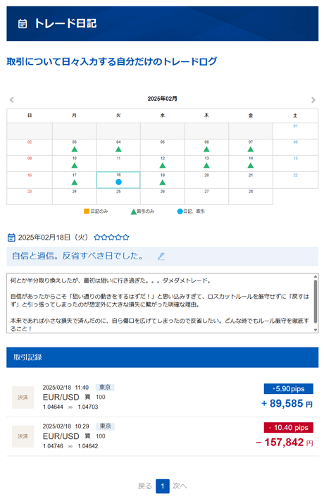
トレード記録はリスクコントロールで言うところの「マインド」にあたる部分で、自分自身の「特性・特徴」を理解するためにも必ず付けて頂きたい記録です。
僕自身は長らく大学ノートなどで付けてきましたが、トレLabではトレード記録を簡単につけて見返すことが出来る「トレード日記機能」をご提供しています。
こちらは次にご紹介する「トレード分析ツール」とも連動しているので、ご自身の強みや弱みを把握して、それをトレードに活かしていくことに特化した「自己育成」機能だとお考えください。
８．トレード分析ツール
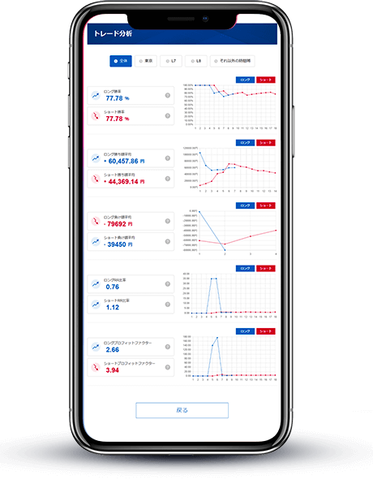
先ほどご紹介した「トレード記録」とワンセットで考えていただきたいのが「自己トレード分析」です。
あなた自身の特性として「どんな相場に強いのか？弱いのか？」「ショートが得意？ロングが得意？」「損切は早い？遅い？」など、自分自身の特徴を掴むことで裁量トレードの精度をドンドン上げていくことが出来ます。
しかしこれらの分析もエクセルやスプレッドシートでやるのは面倒だと思いますので、トレLabメンバーのあなたにはこちらのトレード分析ツールもご利用頂けるようになっています。
ちなみに余談ですが、トレードの売買記録は取引所からCSVをダウンロードしてアップロードするだけで反映されますので、チマチマ入力する必要もないので非常に簡単。
ぜひお役立てください。
９．各種勉強会
トレLabでは「一緒に学ぶ」「学校のように」などの環境を重視していますので、カリキュラムを渡して「はい。おしまい」ではなく、最低でも月に１回は「勉強会」を開催します。
勉強会は実際の相場を元にネイキッドトレードを解説したり、メンバーの事例を元に一緒に考えたりなどの「実践形式」で行います。
また、会場を借りてリアルな場で行う場合と、Zoomなどのオンラインで行う場合を「混ぜながら」実施しますので、実際に会って他のメンバーとのコミュニケーションも大切にしたい人にも、オンラインで学んで黙々とやりたい人にも、どちらの場合にも対応している環境になっています。
勉強会は「最低月に１回」なので、多い月には２～３回行うこともありますし、リアルな場も東京以外の場所での開催も増やしていきたいと思っています。
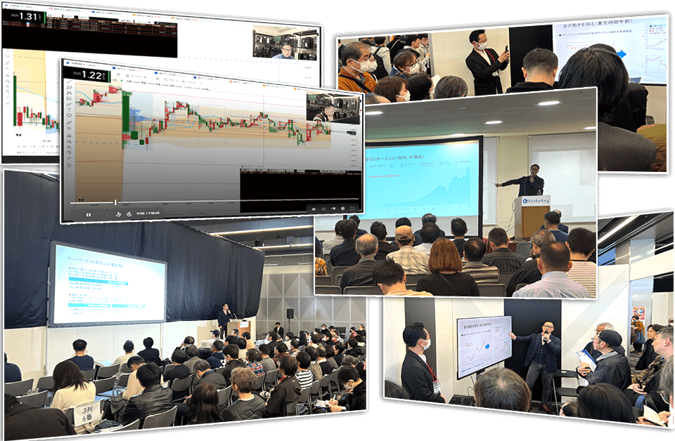
１０．ライブ配信
ライブ配信はその名の通り「ライブ」なので、リアルタイムにトレードを解説する配信を行ったり、振り返りをしたり、質疑応答の時間を作ったりさせて頂きます。
つまり、場合によっては「これから”ココで”エントリーします！」などのシーンも出てくることになるので、あなたがネイキッドトレードをマスターする上で非常に理解が進みやすく、学びのペースが早くなります。
こういった「ライブ」は多くのトレーダーが嫌がることですが、全てを賭けて取り組むと決めているトレードLabでは出し惜しみすること無く実施していきますので、ぜひあなたも使い倒してください。
１１．電話やチャットで、
365日間サポート
トレラボでは「徹底したサポート」を本気の本気で実現していますので、あなたが「どうしたらいいの？」と悩み困るヒマを一切作らないように取り組んでいます！
具体的には・・・
・専用回線による電話サポート（午前9時から18時まで）
・LINE等によるチャットサポート（24時間お問い合わせ可）
・もちろんメールサポートも対応（24時間お問い合わせ可）
・更に専用コミュニティサポート（24時間お問い合わせ可
これらを土日祝日も含む365日体制でサポート致しますので、お正月であってもお気軽にお電話ください。
これが「脱落者ゼロ！」を真剣に掲げているトレードLabの本気です。
１２．専用コミュニティ
トレードLabではスピーディかつ活発にやり取りして頂ける、専用の「グループチャット」をご用意しています。
こちらのグループでは、未経験者から上級者までそれぞれのステージに合わせたグループから、雑談や相談、更には「結果を自慢」する為のグループから「趣味や遊び」を共有するグループまで幅広いグループがあります。
その全てに参加しても構いませんし、自分自身が集中したいグループに絞っても構いません。
「１人は皆の為に、皆は１人の為に」を地で行きながらも、全力で楽しむことも忘れない「大人のためのキャンパスライフ」をコンセプトに楽しんで運営していますので、是非あなたも積極的に活用してくださいね！
※クリック（タップ）で拡大できます
※クリック（タップ）で拡大できます
※クリック（タップ）で拡大できます
１３．各種イベント
繰り返しお伝えしていることではありますが、トレードLabでは「トレードで稼ぐこと」は当然のこととしてサポートしていきますが、それだけではなく「改めて人生を最大限楽しむこと！」を大切にしています。
ですからトレLabとしても積極的に様々なイベントを企画していきます。
バーベキューや飲み会、僕と一緒に筋トレをやってみたり、旅行に出かけるのもいいですね。海外も様々なところを一緒に回ってみたいですし、あなたの趣味や好きなことを共有してもらえると更に嬉しいです。
他のトレLabメンバーの趣味にご一緒させてもらったりするのも、今まで知らなかった「楽しみ」との出会いにもなるかも知れません。ぜひ積極的には「楽しい」を掴みに来てくださいね！
１４．トレLabメンバー
専用会員ページ
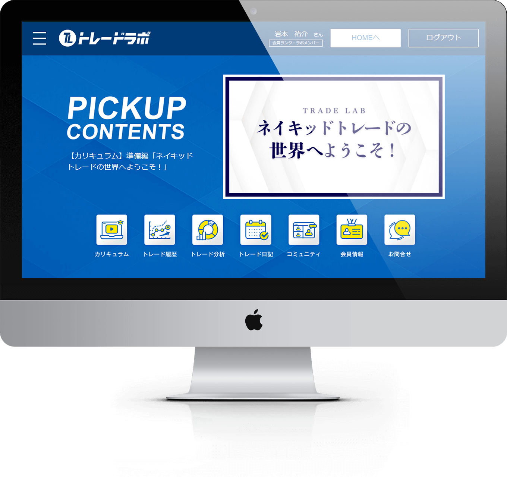
ここまでご説明してきたトレードLabのパッケージ（各種コンテンツ）は、基本的には全てトレLab専用の「メンバーズページ」にてご提供しています。
また、こちらのメンバーズページは常に会員の皆様のご意見を元にバージョンアップし続けていますので、より便利で使いやすいページへと進化し続けます。
もちろん各種カリキュラムやツール、ケーススタディなんかも充実＆拡充を続けますので、あなたがネイキッドトレードをマスターして、生涯「相場（マーケット）から利益を生み続ける」という能力を手に入れる為のお手伝いを全力でやっていきます！
もちろん「楽しむこと」も忘れずに！
はい。これらがトレードLabの全パッケージ内容で、これらを期間中全て自由に好きなだけご利用頂けますので、最大限ご活用頂ければと思います。
ご覧頂いた通りトレラボは、ただ単純に「岩本がノウハウを教える」というだけの場ではありません。
できる限り「リアルな関係」を重視しているので、実際にお会いして直接お話する勉強会や、リアルタイムな配信、ケーススタディの拡充などで常に更新を続けるメンバーズページ。
そして何より「人生の一部を共有する」ために、遊びにも力を入れているのがトレードLabなんですね。
僕にとってはもう人生は完全に後半戦。
残りの人生、せっかくなので僕が今までの生涯をかけてきた「投資・トレード」の全てをあなたに継承してもらいたい・・・
そして、こんな歳になって改めて溢れてくることは「人生を楽しみ切りたい」という想い・・・
これはある意味で僕にとってもあなたにとっても、共に新しく作っていく「もう１つの帰るべき場所」となるような環境ですから、「一時的な場所」では意味がありません。
ではどうすればいいのか？その答えは・・・
カリキュラムは60日間ですが、
トレードLabに終わりはありません！
トレラボはよくある「投資スクール」とは根本的な考え、見ているところが全く違いますので、「ノウハウを伝えて期限が来たらハイ終了～」というモノとは根底から違います。
ネイキッドトレードをマスターして頂くための”学習期間”は確かに60日間（2ヶ月）という期間を設定していますが、だからといってそれで「終わり」ではありません！
トレードLabはあなたと一緒に、トレードを学び、トレードを研究し、投資で安定させつつ、全力で遊んで人生を楽しむためのコミュニティです。
僕とあなたの関係も、時には先生になり時には同士であり仲間になり、特には友達や家族のように、助け合ったり意見をぶつけ合ったり遊びに出かけたり飲みふけって語り合ったり・・・そういう「居場所」だと感じられる関係でありたいと思っています。
ですからトレードLabに「終わり」はありません！
生涯を共にできる環境はここにあります！
とは言え、いきなり「人生を共に～」と言われてもピンと来ないと思いますし、なによりまずは「トレードで稼げるようになる！」という事の方があなたにとっては間違いなく重要なことかと思います。
ですからトレラボではまず、60日間のカリキュラム（学習期間）でしっかりネイキッドトレードを学んで頂いて、その後お試し期間という意味で、120日間コミュニティで一緒に過ごしていただき、そこでネイキッドトレードを実践で学んでいただいたり不明点を解消していただいたりイベント等で一緒に遊んだり・・・
そういう経験をして頂いたうえで、その後も一緒に二人三脚で歩いていけそうかを体験してください！
トレードLabの期間に関して
60日間の学習期間
約2ヶ月という最初の期間はネイキッドトレードをマスターする為の学習期間です。
早い人なら1ヶ月程度でマスターできると思いますが、脱落者ゼロを掲げているので余裕をもって2ヶ月という期間を設けています。
もちろん１人で学ぶだけ・・・では決してありませんので、この期間も勉強会やイベント、リアルタイム配信やグループチャットでお会いしつつサポートさせて頂きます！
120日間の実践期間
学習期間が終わった後も復習や補習を受けて頂く時間は十分確保していますし、何よりここからの約4ヶ月間は「実践期間」ですから、本当の意味でネイキッドトレードをマスターし、生涯スキルへと昇華して頂きます。
また、トレLabの「コミュニティとしての本領」もこの期間に感じて頂き、ただ学ぶだけではなく、トレードは孤独なものではなく側に僕や仲間がいる安心感や、人生を楽しむための環境がある充実感も感じて頂ければと思います。
もちろん「しっかり稼ぐ！」ということは大前提ですから、あなたが壁を感じるようなことが無いように全力でサポートさせて頂きます！
無期限のコミュニティ
ここから先はあなたが望んで頂けたなら・・・という大前提にはなりますが、「2ヶ月＋4ヶ月＝6ヶ月間」という学習期間と実践期間を経て、あなたがトレLabと共に歩むことを「人生における価値だ！」と判断して頂けたなら・・・
その時はぜひ一緒にトレードで稼ぎ、投資で安定させ、遊びを充実させていきましょう！
もちろんトレLabに変わらず在籍頂くかどうかはその時そのタイミングで決めて頂いて構いません。
※6ヶ月後に改めて継続利用のご案内（月額5,500円(税込)～）をさせて頂きます。
全ての環境をそのまま継続いただく事ももちろん可能なので、是非あなたと生涯のパートナーとなれることを願っております！
業界40年の集大成であり、
残りの人生を賭けて築き上げる環境
それがトレードLabです！
ここまでご覧頂いていかがでしたか？
これこそがトレードLabであり、僕が生涯をかけると誓った環境なんですね。
もし、僕が今からトレードを学ぶなら？
もし、僕が学ぶ環境を作るならどういう環境がいい？
もし、効率化できる部分があるならどこを効率化したい？
もし、ツールやシステムで補完できるならどこをツール化したい？
もし、いつでも相談できたり先回りして悩みを解決してくれるなら？
もし、共通の話題や趣味をもって、一緒に遊んだりできる仲間がいるなら？
こういった「もし僕なら？」という前提で、僕自身が誰より心から願った環境を作り上げたつもりです。
今の僕から見て”今の”トレラボは「100点満点！」と言える環境になっていますが、5年後10年後に今を振り返って「あの時は”まだ”80点だったな」と言えるくらい、これから更によりよい環境を作って120点をを目指していきたいと思います！
何よりトレラボは「大人のためのキャンパスライフ」をコンセプトに掲げていますので、稼いで終わりではなく、稼いだお金をどうするのか？税金は？相続は？何に使う？どんな”未経験”がある？それをどうやって楽しむ？？
こういった「人として１つ上のステージ」へ、ストレスを抱えず楽しんで登っていける環境が目指すべき姿です。
何度も繰り返し同じ話をして申し訳ないですが、トレラボであなたにマスターして頂く「ネイキッドトレード」があれば、生涯にわたって「相場（マーケット）」からお金を引き出し続けることは本当に難しくありません。
僕の1ヶ月間密着ビデオでご覧頂いた通り、1日わずか10分程度でも5万円とか10万円くらいならサクサク手に入るようになります。
しかし、お金を「稼ぐだけ」では本来「何の意味もない」のです。
稼いだお金をあの世に持っていくことはできません。
そんな事は僕に言われずとも分かっておられると思いますが、僕自身がこの歳になって「心の底から」実感したことなので、改めて声を大にしてお伝えしたいのです。
残された人生を最大限楽しむためにお金はメチャクチャ大切なので、しっかりガッツリ稼いで頂かなくてはいけません！
そしてそのお金で何事にも変えられない「経験」を全力で買い込みましょう！
アホ臭くても全く問題ありません！むしろこれから改めて「青春」を取り戻すくらいが間違いなく楽しい人生のはずです！
そんな青臭いことを大の大人が本気で取り組む場所が「トレードLab」なので、少しでもあなたが共感できる部分があるのなら、ぜひ飛び込んできてください！
僕達は心の底から歓迎いたします！
“人生を取り戻す”
そんなトレードLabに
いったいどれだけの価値があるのか？
手前味噌ではありますが、トレラボほど「参加者に稼いでもらう！」という結果にコミットした環境は他にはないと自負しています。
しっかり稼いで頂かないことには本来の目的である「全力で遊ぶ！」というミッションが達成できないので当然です。
ただ、その結果にコミットする為にご提供する「アルゴシステム」は、常に膨大なパソコンを稼働し続けてデータ取得を続けながら常に最新の状態を維持しているので、電気代だけでも恐ろしいほどかかっていますし常に開発費が発生しています。
その上、常に最新版をお届けする為にトレーディングビューというチャートサービスの使用上、どうしても人の手で１つ１つ最新の状態に設定しなければいけませんので、その人件費も考えるとアルゴシステムだけで30万円は必要です。
トレーディングビューの申し込みだけはお願いしますが、その後のアルゴシステムや相乗りチャートの基本的な設定はコチラでほとんど行わせていただきます。
これらに加えてロット計算ツールやトレード分析ツールなど、様々な補助ツールの開発も加味すれば決して高くはない値付けではないでしょうか？
更に毎月開催する「勉強会」に関しては、リアルな会場を借りたりもする都合上どうしても大きなコストがかかってしまいますので、普通に勉強会やライブ配信などのサービスを提供するなら「5万円×6ヶ月＝30万円」くらいは必要かと思います。
また、365日休み無しのサポート体制を電話、LINE、メール、グループなどあらゆる体制で整えていますし、リアルタイムなトレード配信や、常に更新し続けるケーススタディを元に解説を行い続けることは、もはや「コンサルティング」と言っても過言ではないと思います。
これだけのコンサル＆サポートであれば、人件費等の観点から見ても6ヶ月間で100万円くらいは普通にかかると思います。
僕が調べた限りでは最低でも50万円～は必要でしたし、高めなところでは300万円くらい必要でしたから100万円という数字は妥当な金額だと思います。
こうやって見ていくとシステム関係で30万円、勉強会やライブ配信で30万円、コンサル＆サポートで100万円ですから合計で160万円になってしまいました。
2ヶ月の学習期間＋4ヶ月の実践期間
トレLab 6ヶ月間で160万円は高いでしょうか？
シンプルな計算で価格出しをしてみましたが、トレLabの価格に関しては本当に悩みに悩みました。
この計算でさえ「原価」を元にした計算でしかなく、トレLabの本当の価値とは「ネイキッドトレード」というノウハウにある・・・という点を考えると、どのように計算すべきなのか難しすぎると言うのが本音です。
少なくともトレラボという環境の裏には、僕の40年間かけて磨き上げた全てが詰まっています。
「実需×出来高」でトレードしている人は、恐らく日本では僕だけ（SNS等でも一切見かけませんので）だと思いますし、何よりこのトレードによる結果はリスクリワード比1：1.48で勝率7割という事実が「証明されている」わけです。
ここに辿り着くまでに僕が投資してきた時間は40年間、分析やデータ取りを含めた開発コストは恐らく数千万円、様々なトレード手法を学んだりしてきた投資額も1,000万円くらいはかかっていると思います。
そんな全てを詰め込んだカリキュラムもご提供しますし、アルゴシステム等も最新版にアップデートし続けますし、毎月の勉強会は無料で参加いただけますし、365日サポートも続けていく・・・
それを思えばどう考えても200万円以上の価値はあると思っています。
今までの人生を振り返ってみてください
このように、あなた自身も今まで大きな目標のためには大きなお金を支払って学んできたかと思います。もちろん僕自身もそうです。
だからこそ、トレLabの価格に関しては正直言って今も迷い続けています。
トレLabは僕の40年間の集大成であり人生最後の本気の取り組みですから、今までの全てとこれからの全てを注ぎ込みますので、押し売りする気は全くありませんが安売りする気もありません！
その上で、いつまでもグダグダとやってるわけにはいきませんのでバシッと決めたいと思います。
システム関係や勉強会、サポート等の人件費といった実コストをベースに考えて160万円、僕の40年間の全てを詰め込んだノウハウを加味すると200万円以上の価値だとお伝えしました。
しかし、１人でも多くの人にネイキッドトレードをマスターして稼げるようになって頂き、残りの人生を一緒に楽しめる仲間になって頂きたいという願いをこめて、期間限定ではありますがモニター価格として24.8万円（税込27.3万円）でご提供させて頂きます。
正しく価値が分かる人が見たらビックリするような価格だと思いますが、この価格で間違いありません。
先ほど「一般的な」学習に伴う費用を振り返ってみましたが、その中でわりと近い学習分野は「専門学校」かと思いますが、その平均的な「年間授業料」はお伝えしたように129万円でした。
※令和6年、社団法人東京都専修学校協会調べ
高所得を目指せる医者や弁護士になろうと思うと、私立やら公立やら何やら程度の差はあれど平均1,000万円以上の学費が必要です。
これらと比較すると、今回のモニター価格は相当ディスカウントさせて頂いた価格だということがお分かり頂けるかと思います。
ここまで思い切ったことをするのは「それだけ本気」だということ以外に理由はありません。
FXの世界は数字が全てです。
投資だってそうです。
数字は嘘をつきませんから、数字という「結果」が全ての世界で「あなたに結果を出してもらうこと」に全身全霊をかけています。
でないと「一緒に残りの人生を楽しむ」という本来の目的が達成できなくなってしまうので。
つまり「必ずあなたに結果を出してもらう」という点における僕の自信の表れであると同時に覚悟の証でもあります。
僕はトレードLabという「環境」に全力を尽くすと心に決めていますし、あなたにも約束してきました。
他の全てを捨てて残りの人生をトレLabに尽くすと決めているプロジェクトなので、あなたが「私も本気になりたい！」と思っておられるなら、ご参加頂ければと思います。
参加受付は期間限定となります。
トレードLabは僕にとって「人生の一部」となっていて、あなたに楽しさ溢れる未来を掴み取って頂くことは「もはや使命」と言っても過言ではないレベルで本気で取り組んでいます。
だからこそ・・・
それくらい真剣だからこそ、下手すれば原価割れしてしまうのではないか？と心配なレベルで参加費のディスカウントもさせて頂いております。
まずは参加して頂いて、その目で結果をご覧いただき、その手に現金を掴んで頂いて、そしてその心が踊るような体験をして頂ければ、きっと「本当の仲間」としてこの先の人生を共有していける・・・
そう思っているからです。
ですがもしかすると、思った以上にコストも労力もかかってメンタルも疲弊するかも知れません。
それだけならまだ良いですが、下手すると「お前がオレを稼がせろよ！」的なメチャクチャな要求をされる参加者さんもおられるかも知れません。
これらはしばらく運営してみないことには分からない事なので、いったん今の価格は「期間限定」とさせて頂きまして、改めて「本当にこの価格でいいのか？」という検証をしてから再決定していこうと思います。
そんなわけですから、今ご覧頂いているこちらのページは期日になりましたら参加受付を停止致しますので、その点はご了承頂ければと思います。
それでは宜しいでしょうか？
これで僕が伝えたかった事は一通り全てお話できたかと思いますので、さっそく「トレードLab」の参加受付を行っていこうと思います。
出来ればこれからも継続して「新規の参加者さん」の募集は続けていきたい想いはありますが、そちらはあくまで「予定」となっているので、現時点では何とも言えません。
僕やスタッフ達の負荷やコストの問題、参加される方々の結果やリテラシーなど、様々な要素を踏まえて「今後」に関しては考えていこうと思っていますので、ひとまず今回に関しては期間限定での参加受付・・・
期日になりましたら受付は終了させて頂きます。
さて、それでは・・・
あなたがトレードLabに参加して、生涯にわたってトレードで稼ぎ続けるスキル（稼ぐ力）を身に付け、その上でどれだけ人生を楽しんでいくかはあなた次第です。
あなたが「一緒に歩みたい！」と望むのであれば、下記「申込みボタン」をクリックしてトレードLabにご参加ください。
僕達が全てを賭してあなたをサポートしていくことをお約束します。
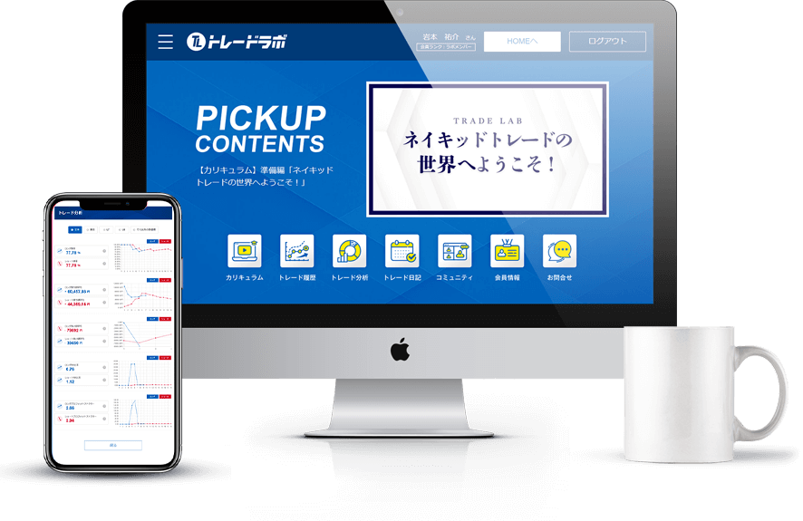
| 講座名 | トレードLab |
|---|---|
| 受講期間 | 2ヶ月間 |
| 実践期間 | 4ヶ月間 |
| パッケージ内容 |
１）ネイキッドトレード
２）アルゴシステム ３）相乗りチャート ４）リスクコントロール ５）ケーススタディ ６）ロット計算ツール ７）トレード記録システム
８）トレード分析ツール
９）各種勉強会 １０）ライブ配信 １１）電話やチャットで365日間サポート １２）専用コミュニティ １３）各種イベント １４）トレLabメンバー専用会員ページ |
| 参加費用 | 248,000円（税込 272,800円） |
このページは期間限定の特設ページです。
※期日になりましたら募集を終了します。
お客様の声
よくあるご質問
FXを含め外国為替市場というのは世界で最も大きなマーケットです。
たった1日の取引量が1250兆円にものぼる巨大マーケットなので、1日に100兆円くらいは動かさないとマーケットインパクトは起こりえませんし、飽和など考えられない規模の世界です。
むしろ未経験者や初心者の方が変なクセがついたりしていないので、マスターするのは早いかも知れません。
そもそも僕を含め誰しも最初は未経験者なので、未経験者がダメな理由はどこにもありません。
FXのチャートシステムとしてはMT4（メタトレーダー４）の方が有名ですが、MT4よりも遥かにTradingViewの方が使いやすく分かりやすい。つまり難しくないということです。
僕のようにシステムの開発を行うならば大変なことも多いですが、ただ「使うだけ」であれば簡単です。
上記に挙げた「TradingView（トレーディングビュー）」というチャートシステムの有料版が必要です。
月額1500円程度ですが、こちらは必ず必要になります。
厳密には証券会社や取引所の最低額に準ずる形になりますが、取引所は海外か国内かでも各社でも違いますので一概には言えません。
ネイキッドトレードというノウハウとしては、国内の取引所であれば「最低7万円」あればトレードに問題はありませんが、余裕を見て10万円を最低資金とさせて頂いております。
海外の取引所でも国内でもどこの取引所でも、トレードする分には特に問題はありませんのでお好きなところをご利用ください。
ただ、トレLabでご提供している「トレード履歴読み込み」「トレード日記」「トレード分析」などの機能との連携は、GMOクリック証券・SBI証券の２社のみ可能となっております。
また、僕が使っている取引所はサクソバンク証券、GMOクリック証券が主です。
アルゴシステム自体は、トレードLabメンバー様には永続的に使って頂けますが、逆に言えばトレードLabを退会された場合はアカウントの接続が切れてしまいますので使えなくなります。 これはアルゴが常に最新のデータ取得を行った上で改修され続ける仕様上、ご了承頂く他ありません。
ただ、トレLab自体は退会するけれどアルゴシステムは引き続き使いたい…という場合は、月額5,500円(税込)～で引き続きご利用頂けるプランもご用意しています。
ネイキッドトレードではチャートに張り付く必要は全くありません。その仕様上「今日はチャンスがありそうか？」というのは事前にだいたい分かりますので、先に心構えができることが１つ。
さらに、アルゴのサインはスマホでも通知されますので、その通知を確認してからゆっくりトイレ等に向かっていただいて、スマホでチャートを確認して「指値＝予約」を５分ほどで設定すればいいので何の問題もなくトレード可能です。
トレード等に関してはスマホやタブレットだけで問題ありませんが、トレーディングビューの設定はPCで行って頂く必要があります。
また、ネイキッドトレードのカリキュラムも「チャートでの説明」がメインなので、パソコンの画面でご覧頂くほうが見やすいと思います。
トレーディングビューもトレLabメンバーズページも「WEBシステム」なので、WindowかMacか？PCかスマホか？などの「端末依存」はありません。ネットに繋がればどんなパソコンでも問題なくご利用頂けます。
また、18〜19歳の場合は親権者さまの同意書をご提出いただくか、親権者さま自身がお申し込み頂くかのどちらかとなります。
ネットさえ繋がる環境であれば、トレLabメンバーズページもトレーディングビューも取引所も問題なく使えますので、FXに国境はありません。世界中どこでも可能です。
ただし、トレLabの参加受付において、銀行振込みの海外送金では受付不可となっておりますので、お申し込み頂く場合はクレジットカードによる決済でお願いします。
ですが、ネイキッドトレードを実践するのはあなたご自身です。あなた自身が「本気で取り組む」ならばマスターして頂けると思いますが、他力本願人任せでは何も身につきませんので、その点だけは誤解のないようにお願いいたします。
そもそも「ヨーイドン」でスタートするようなマラソンではありませんから、あなたの進めやすいペースで進めて頂いて構いません。
もちろんトレLabのカリキュラムは「未経験者でもわかる！」を意識して作成していますので、ゼロからでも進めて頂きやすい作りになっているので、その点はご安心ください。
勉強会はオンライン開催は必ず行いますが、リアル開催は不定期（交互予定）となります。
リアル開催の開催地はやはり東京がメインになりますが、大阪や名古屋、札幌、福岡などの主要都市もまわっていきたいと考えていますが、日程に関しては確約できません。メンバーズページにて発表しますので、そちらをご確認ください。
トレLabメンバーさんが参加しやすいように、メイン開催は「土日」のどちらかになります。開催時間も日中です。
ただし、マーケットが開いている平日の方が画面をお見せしつつ説明できるので、不定期にはなりますが平日開催も行います。
平日の「夜」にオンライン開催であれば参加できる方も多いかと思いますので。
勉強会に関してのコストは運営が負担しますので、完全無料でご参加頂けます。
ただし、勉強会の後に「飲みに行こう！」など懇親会等が開催された場合は、そちらに参加される場合のみ実費負担だけお願いいたします。
トレLabのカリキュラムは「オンライン完結」のカリキュラムなので、勉強会に参加しなくてもカリキュラムの進行に影響はありません。
また、微妙に判断に迷うようなシーンの解説も「ケーススタディ」を毎週お届けするのでそちらで補完できるかと思います。
勉強会はあくまで「実際に話して理解を深めたい」というニーズと、僕自身がトレLabメンバーと会って話して遊びたい！という想いから開催しているものなので、メインカリキュラムとは直接的にリンクしていませんのでご安心ください。
トレLabでは「勉強会」や「ライブ配信」をZoom等でも行っていますので、その中で質疑応答も行っているので気軽にご質問ください。
ただし、日常的な「Zoomによるサポート」は行っておりません。
口頭確認したい場合は「お電話」ください。事前にメールやチャットで確認したいシーンのスクショ等を送って頂けるとスムーズです。
ネイキッドをマスターすると、どうしても収益が発生してしまいますので税金の問題が出てきてしまいます。
トレLabの運営チームには「税金に詳しいメンバー」も複数人参加していますし、弊社にも顧問税理士がいますので、基本的な方針に関してはお伝えできますが、専門的なアドバイスは税理士資格が必要ですので、最終的には税理士に依頼される方が確実かと思います。
ご不明な点があれば、
お気軽にお問い合わせください
トレLabお問い合わせ専用ダイヤル
050-5838-0720
受付時間は午前9時から18時までです。
（土日祝日を含む365日対応）
※混雑時には繋がらない場合がございます。
時間をおいて再度おかけ直しください。
最後に
非常に長いメッセージに最後までお付き合い頂いてありがとうございました。
お伝えしたいことが多すぎてこれだけの長文になってしまいました。なんだか申し訳ないです。
何度もお伝えしてきたことではありますが、トレードLabでは相場（マーケット）からトレードで稼ぎ続けるための「生涯スキル」を身につけて頂くことを「最初の１歩」と定義し、その先は投資で運用を安定させたり時間的な余裕を捻出して頂いたり、もう１つ先のステージまで駆け上がって頂くためのコミュニティです。
しかし、トレラボが目指す本当の目的はソレではありません。
トレラボが目指しているのはその先。本当にあなたが「生きたい生き方」です。
こういった「投資スクール」などに参加される方の多くは、本音を言うなら「ただ稼ぎたいだけだ！」というのが率直な気持ちなのは重々承知していますが、僕としてはやはりそれだけでは「結局のところつまらない」と思ってしまうのです。
ネイキッドトレードをマスターすれば、相場（マーケット）で「稼ぐ」というのは思った以上に大したことではありませんし、存外「こんなものか…」と冷ややかな気持ちで生きることになると思います。
ある意味で「それがトレーダー」という人種なので。
ですが、１人もくもくと機械的にトレードして「ただ稼ぐだけ」という生活の先に、本当に楽しいこと、幸せなことってあるのでしょうか？
例え収入は少なくとも、人と関わり続けられる仕事をしている方が幸せなんじゃないだろうか？
だけど、お金で買える幸せを「自分には無理だ」と放棄して我慢し、多くの人の顔色を伺いながら疲弊し続ける人生も、それはそれで何のために生きているのか分からなくなりそう・・・
こういった悩みというか葛藤と幾度となく向き合ってきましたが、このトレードLabという環境を実現できたことで、稼ぐことと人生を楽しむことを両立できる環境が作れたと自負しています。
きっと「隣の芝生は青かった」と思います。
ですがもう、どちらから見た隣なのか？は考えなくて構いません。どちらの芝生もあなたの庭にしていいのです。
折り返した後の人生なんて、もっと自由にワガママに生きていいのです。
それが出来る環境はすでにここにあります。
「“青春”をもう１度」
これこそが僕達が目指すべき未来です！
最後に少しだけ目を瞑って胸に手を当てて考えてみてください。
「残された人生は後どれくらいあるのか？」
「その人生はどのように生きていきたいか？」
「本当に”後悔がない”人生とはどういったものか？」
ここで浮かぶイメージが、例えどれだけバカげたものでも、どれだけ自分勝手なものでも、どれだけ下品であろうとも、どれだけ聖人君子すぎるようなものであっても、それこそが本当の意味であなたが求めている未来のはずです。
さて、その未来は”今のまま”で手にいれることが出来る未来でしょうか？
この答えが「YES」であるならば、そっとこのページを閉じていただいて今まで通りの日常にお戻りください。
ですが答えが「NO」であるなら、今この瞬間から僕と一緒に「得たい未来」を手に入れにいきませんか？
どうせ人生なんてものは、楽しもうが苦労しようが、精一杯頑張ろうが何もしなかろうが、全て等しく毎日１日分の命を支払って生きていることだけは変わらない。
そうやって「死ぬために生きてる」ことだけは何をやっても変わらないので、新しいチャレンジをどうか恐れないでください。
人生なんて誰しも最後は死ぬだけ。
だったらやりたいことをやりたいように全力で楽しんだもん勝ちです！
トレードLabは「最後まで楽しんでやろう！」と、１歩踏み出した大人たちの青臭いコミュニティ。
期間限定の参加受付が終了する前に、あなたも是非その１歩を踏み出してみてください。
後は僕が責任を持って、大人のためのキャンパスライフをお届けするとお約束します！
岩本祐介
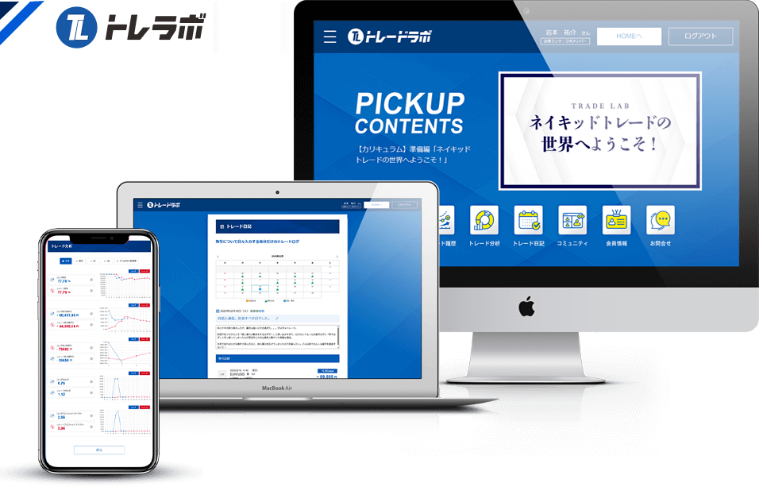
| 講座名 | トレードLab |
|---|---|
| 受講期間 | 2ヶ月間 |
| 実践期間 | 4ヶ月間 |
| パッケージ内容 |
１）ネイキッドトレード
２）アルゴシステム ３）相乗りチャート ４）リスクコントロール ５）ケーススタディ ６）ロット計算ツール ７）トレード記録システム
８）トレード分析ツール
９）各種勉強会 １０）ライブ配信 １１）電話やチャットで365日間サポート １２）専用コミュニティ １３）各種イベント １４）トレLabメンバー専用会員ページ |
| 参加費用 | 248,000円（税込 272,800円） |